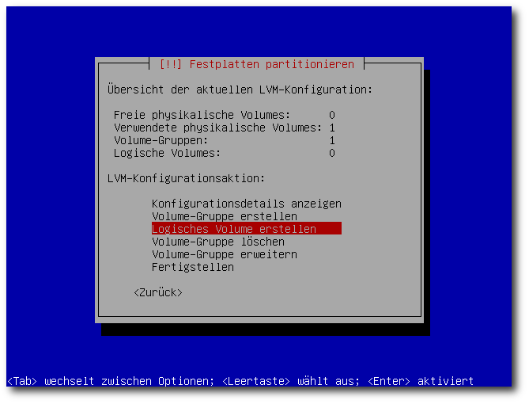

freiesMagazin Mai 2010 (ISSN 1867-7991)
Topthemen dieser Ausgabe
Roboter sprechen Mono
Ende letzten Jahres ging der zweite, von freiesMagazin initiierte Programmierwettbewerb zu Ende. Gegenüber den anderen Teilnehmerprogrammen konnte sich eine Implementierung in Mono durchsetzen. Ein guter Grund, um einerseits einen näheren Blick auf Mono sowie andererseits auf den Algorithmus der KI zu werfen. (weiterlesen)
Ubuntu-Systemverschlüsselung per Alternate-CD
In dieser Anleitung wird erklärt, wie man bei der Alternate-Installation von Ubuntu und Co. das gesamte System bis auf die Boot-Partition verschlüsselt. Im Gegensatz zu anderen Anleitungen erfordert dies wenig bis gar kein Wissen über Verschlüsselung im Allgemeinen, LUKS oder LVM, keine nachträgliche Installation von Paketen und ist auch von Einsteigern leicht nachzuvollziehen. (weiterlesen)
Neo – Ein ergonomisches Tastaturlayout
Die Computertastatur wird tagtäglich von Millionen von Menschen benutzt und ist die mit Abstand wichtigste Mensch-Maschine-Schnittstelle. Trotzdem stellt scheinbar niemand ernsthaft ihre Konzeption in Frage. Die Buchstabenverteilung hätte sich irgendwie nach ergonomischen Gesichtspunkten entwickelt, glauben viele. Falsch: Sie ist ein mechanisches Relikt aus längst vergangenen Zeiten. Ein 140-jähriger Fehler, den Neo beheben möchte. Denn Neo ist ganz anders: besser, schneller, vielseitiger und praktisch konkurrenzlos. (weiterlesen)
Zum Index
Inhalt
Linux allgemein
Roboter sprechen Mono
Die Welt der Fensterdekorationen
Der April im Kernelrückblick
Anleitungen
Ubuntu-Systemverschlüsselung per Alternate-CD
Software
Mit Metapixel ein Mosaikbild erzeugen
Der Portscanner Nmap – Eine Einführung
Hardware
Neo – Ein ergonomisches Tastaturlayout
Magazin
Editorial
Veranstaltungen
Konventionen
Impressum
Zum Index
Editorial
Nun heißt es Mai, MaiReaktionen auf die Aprilausgabe
Die Reaktionen auf die Aprilscherzausgabe von freiesMagazin [1] [2] [3] [4] haben uns sehr gefreut und teilweise erheitert. Ingesamt wurde uns die „Schreibmaschinen“-Version nicht übel genommen und die meisten Leser haben den Scherz natürlich sofort erkannt. Einige haben sogar in die gleiche Kerbe geschlagen und das neue Design in den höchsten Tönen gelobt und sich für zukünftige Ausgaben immer dieses Design gewünscht. Nun, leider müssen wir all diese Leser enttäuschen. freiesMagazin wird wohl immer so bunt und aufgebläht bleiben, wie es derzeit ist. ;) Bei denjenigen, die den Scherz für bare Münze genommen haben, entschuldigen wir uns einfach vorsichtshalber einmal. Bitte wandern Sie nicht ab, freiesMagazin bleibt so, wie es ist. Aber einmal im Jahr sollte man sich so einen Scherz erlauben können. Dass dies nicht allen Recht ist, ist uns aber auch von vornherein klar gewesen. Nachdem im letzten Jahr der Spaß (am 1. April) aber zu kurz kam (es gab keinen Aprilscherz und einige Leser dachten, der Programmierwettbewerb wäre es [5]), wollten wir uns dieses Jahr etwas austoben. Nächstes Jahr gibt es dann stattdessen vielleicht wieder einen Programmierwettbewerb. ;)freiesMagazin im Interview
Am 18. April 2010 veröffentlichte der neu gestartete Interview-Blog in|ward view [6] seinen ersten Beitrag. Und wir können uns geehrt fühlen, dass der Betreiber des Blogs, Maximilian Lienen, sich den Chefredakteur von freiesMagazin, Dominik Wagenführ, für sein erstes Interview geholt hat [7]. Wir bedanken uns bei Maximilian Lienen für das Interview und wünschen ihm viel Erfolg mit seinem Blog. Und Ihnen, liebe Leser, wünschen wir nun viel Spaß mit der neuen Ausgabe Ihre freiesMagazin-Redaktion Links[1] http://www.freiesmagazin.de/20100401-aprilllausgabe-erschienen#comments
[2] http://ikhaya.ubuntuusers.de/2010/04/01/freiesmagazin-04-2010-erschienen/#comment_1
[3] http://ikhaya.ubuntuusers.de/2010/04/02/freiesmagazin-04-2010-jetzt-aber-wirklich-und-richtig-erschienen/#comment_1
[4] http://www.pro-linux.de/news/1/15494/comm/1/show-all-comments.html
[5] http://www.freiesmagazin.de/20090401-programmierwettbewerb-gestartet#comment-60
[6] http://inward-view.blogspot.com/
[7] http://inward-view.blogspot.com/2010/04/dominik-wagenfuhr-ist-der.html
Das Editorial kommentieren
Zum Index
Roboter sprechen Mono
von Martin Sommer Ende letzten Jahres ging der zweite, von freiesMagazin initiierte Programmierwettbewerb zu Ende [1]. Gegenüber den anderen Teilnehmerprogrammen konnte sich eine Implementierung in Mono durchsetzen. Ein guter Grund, um einerseits einen näheren Blick auf Mono sowie andererseits auf den Algorithmus der KI zu werfen.Vorwort
In den letzten Jahren wurde mit dem .NET Framework eine neue Programmiersprache aus der Taufe gehoben – C# (C-Sharp). Die Einreichung zur Normung von C# durch Microsoft in Kooperation mit Hewlett Packard und Intel erfolgte vor nunmehr 10 Jahren. Seitdem wurde der Sprachumfang mehrmals erweitert. Mit dem .NET Framework 3.5 steht Programmierern mittlerweile ein sehr mächtiges Entwicklungswerkzeug zur Verfügung. Bereits 2001 wurde das Mono-Open-Source-Projekt gegründet, wodurch C# vom .NET Framework losgelöst und somit weitestgehend plattformunabhängig eingesetzt werden kann. Doch nicht allein die Tatsache, dass die Entwicklung von Mono verständlicherweise immer einen kleinen Schritt hinter Microsofts .NET Framework zurückliegt, lässt Mono in den Augen vieler Programmierer – besonders auch in Hinblick auf Freie Software – wenig attraktiv erscheinen: Besonders groß sind die Bedenken bezüglich der Abhängigkeit von Microsoft & Co. Die relevantesten Vorurteile und deren Gegenargumente sind vielleicht die folgenden:Mono ist langsam!
Bei Mono/.NET wird, wie schon bei Java, der Maschinencode erst zur Ausführungszeit des Programmes erzeugt (JIT Compiler – Just-In-Time-Kompilierung). Dies verlangsamt die Ausführung des Programmes natürlich. Demgegenüber stehen aber einige Annehmlichkeiten wie die automatische Speicherverwaltung (Stichwort „Garbage-Collector“) oder die Kapselung komplexer Routinen in einfache Methodenaufrufe sowie die Überwachung und der Zugriff auf Klassen- und Objektinformation während der Laufzeit [2]. Es gibt diverse Performancetests im Vergleich mit C++, Java, Perl etc. [3] [4] [5]. Aber allen Zahlenschiebereien zum Trotz kann man guten Gewissens behaupten: Für den überwiegenden Großteil aller entwickelten Programme spielen die Geschwindigkeitsunterschiede der einzelnen Programmiersprachen keine oder nur eine unwesentliche Rolle. Viel wichtiger ist dabei, ob alle Anforderungen eines Projektes durch eine bestimmte Programmiersprache abgedeckt werden können und wie groß der Aufwand dafür ist – und in dieser Hinsicht steckt bei näherer Beschäftigung viel Potential in Mono [6]..NET ist von Microsoft!
Das .NET Framework stammt von Microsoft, ist nicht frei von Patenten und generell „böse“! Diese platte Aussage sollte man differenzierter betrachten: Das .NET Framework ist nämlich an sich sehr gut, nur Microsoft (respektive Novell) ist „böse“ – und selbst darüber wird noch gestritten! Aber ernsthaft: Diesem Punkt gebührt in diesem Magazin sicherlich ein eigener, sachlicher und umfangreicher Artikel, an dieser Stelle seien für Interessenten zumindest ein paar Referenzen zum Weiterlesen ans Herz gelegt [7] [8] [9] [10].Es gibt doch schon C++, Python, Java etc.!
Das ist ein entscheidender, wichtiger und noch oftmals missverstandener Punkt. Während beispielsweise die Programmiersprache Java einzig in Kombination mit der plattformunabhängigen Java-Laufzeitumgebung entwickelt wurde [11], sind bei .NET und Mono die Implementierung des CLI (Common Language Infrastructure) Standards, welcher plattform- und sprachneutrale Anwendungsentwicklung gewährleisten soll [12]. Somit lassen sich CLI-Anwendungen auch in Java, Python oder PHP realisieren [13]. Allerdings soll C#, das mit dem .NET Framework in die modernen Programmiersprachen einzog, im Fokus dieses Artikels stehen. Im Folgenden wird daher zur Vereinfachung nur noch von C# gesprochen, obwohl es sich oftmals um Merkmale von Mono/.NET bzw. der CLI an sich handelt. Wer jetzt zu der Antwort gekommen ist „Warum nicht?“, der erhält mit diesem Artikel eine Einführung in die Sprache und die Syntax von C# – ein Grundverständnis von objektorientierter Programmierung und einen Einblick in die Elemente heutiger Programmiersprachen wird dabei vorausgesetzt. Als übergeordneter Leitfaden dieses Artikels dient aber, wie bereits angekündigt, der Entwurf einer Spieler-KI für den zweiten Programmierwettbewerb von freiesMagazin, welcher großteils auch losgelöst von der tatsächlichen Implementierung in C# beleuchtet und ohne Programmierkenntnisse nachvollzogen werden kann.Die ersten Schritte in C#
Zur Einführung in C# einige Grundbegriffe, die in diesem Artikel häufiger auftauchen: Namespace: Die Übersetzung lautet „Namensraum“: Mehrere Klassen können in einem Namensraum gruppiert werden, um in einem Projekt oder einer Bibliothek eine inhaltlich logische Strukturierung aufzubauen. Assembly: Eine Assembly ist eine Zusammenfassung mehrerer Klassen in möglicherweise auch unterschiedlichen Namensräumen zu einer logischen Einheit. Man könnte Assembly auch als Bibliothek bezeichnen, allerdings wäre das nicht ganz richtig, da auch ein ausführbares Projekt als Assembly gilt. In einer Assembly können beliebig viele Verweise auf andere Assemblys existieren, um auf die dort enthaltenen Klassen zuzugreifen. Gegenseitige Verweise sind jedoch ausgeschlossen – wenn in der Assembly A ein Verweis auf Assembly B besteht, kann B keinen Verweis auf A haben. Property: Eine Property (Eigenschaft) ist ein weiterer Bestandteil einer Klasse. Sie ersetzt hauptsächlich die Setter- und Getter-Methode von globalen Klassenvariablen (Feldern eines Objektes), kann aber beispielsweise auch als parameterlose Methode angewandt werden. Auf Eigenschaften wird später nochmals genauer eingegangen. Member: Member ist der Oberbegriff aller Methoden und Eigenschaften einer Klasse und wird mit „Mitglied“ übersetzt. Attribut: Durch Attribute können zusätzliche Metadaten zu Assemblys, Klassen, Aufzählungen und Mitgliedern einer Klasse festgelegt werden. Attribute mögen anfänglich und für „einfache“ Projekte als nicht bedeutungsvoll erscheinen, sind aber nach einiger Eingewöhnungszeit unheimlich komplexe und mächtige Werkzeuge, die aber in diesem Artikel leider kaum Platz für weiterführende Erklärungen finden werden. Es folgt nun das allseits beliebte „Hello World“:
using System;
namespace HelloWorld
{
public static class Program
{
public static void Main(String[] args)
{ //zuerst Konsole dann graphische Ausgabe
Console.WriteLine("Hello World");
System.Windows.Forms.MessageBox.Show("Hello World");
}
}
}
|
- using stellt alle Klassen und sonstigen Definition, wie beispielsweise Schnittstellen und Aufzählungen, aus dem darauf folgenden Namensraum für die Klasse direkt zur Verfügung. Beispielsweise ist Console im Namensraum System definiert, aber die Voranstellung ist durch using System; überflüssig – im Gegensatz zu der grafischen Ausgabe, bei dem der gesamte Namensraum vorangestellt wurde.
- namespace definiert den Namensraum, in welchem die Klasse eingebunden werden soll
Das Rennen der Robotor
Die Details zum RoboRally-Programmierwettbewerb können auf den Seiten von freiesMagazin nachgelesen werden [15]. Hier daher nur eine kurze Zusammenfassung: Es geht darum, eine KI für ein Spiel zu entwickeln, bei dem ein Roboter auf einem n·m großem Spielfeld möglichst schnell von einem Startfeld zu einem festgelegten Zielfeld gelangen muss. Das Spielfeld wiederum hat viele verschiedene Elemente wie Mauern oder Förderbänder sowie Fallen in Form von Löchern und Schrottpressen. Bewegt wird der Roboter durch Spielkarten, welche die Bewegungen des Roboters vorgeben, wie Drehung nach links oder rechts sowie Anzahl der Vorwärts- bzw. Rückwärtsschritte. Die Karten liegen verdeckt auf einem Kartenstapel, von dem der Spieler jede Runde acht Karten zieht und fünf von diesen in gewählter Reihenfolge ausspielt. Daraufhin wird der Roboter entsprechend den gewählten Karten bewegt, wobei die Spielfeldelemente Auswirkungen auf die Bewegung und Zielposition des Roboters haben können. Das Spiel endet bei Erreichen des Zielfeldes, beim Tod des Roboters oder wenn der Kartenstapel komplett heruntergespielt wurde. Im Folgenden wird ein kleines Beispielfeld betrachtet. Die Koordinaten der Felder werden dabei durch Tupel der Art „(x,y)“ gekennzeichnet. Anders als bei der Aufgabenstellung, wie sie beim Wettbewerb gegeben wurde, beginnt die Nummerierung des obersten Feldes nicht bei 0, sondern bei 1.Der Ansatz
Der grundsätzliche Lösungsansatz ist bei der gegebenen Aufgabenstellung schnell ersichtlich: Die KI bekommt jede Runde acht neue Karten, probiert davon alle möglichen Kartenkombinationen fünf aus acht aus und wählt jene Kombination, die den Roboter auf das bestmögliche Feld befördert. Fertig! Von der Berechnungszeit her ist der Ansatz gar kein Problem. Sowohl die Kartenkombinationen als auch das jeweilige Zielfeld können im Rahmen der für den Wettbewerb vorgegebenen Zeit problemlos berechnet werden. Aber das entscheidende Schlüsselwortpaar in dem beschriebenen Ansatz ist natürlich „das bestmögliche Feld“. Hier kommen schon drei wichtige Details ins wortwörtliche Spiel:- Felder, die zum Tod des Roboters führen, sind natürlich tabu – und seien sie auch noch so nah am Zielfeld. Auf dem Beispielfeld sind dies Feld (1,3) und (2,1).
- Die reine Distanz eines Feldes zum Zielfeld sagt nichts bzw. nur sehr wenig über dessen Wertigkeit aus. Das Feld (3,2) liegt genauso nah am Zielfeld wie das Feld (2,3), allerdings ist es das denkbar ungünstigste Feld – abgesehen von den Tabufeldern.
- Da sich beispielsweise der Roboter nicht von allein seitwärts bewegen kann und auch die Karten zum Rückwärtslaufen nicht so oft gezogen werden wie die zum Vorwärtsbewegen, ist die Blickrichtung eines Roboters auf ein und demselben Feld von Bedeutung. So könnte auf dem Beispielfeld die Startposition des Roboters besser sein, wenn er nach unten schauen würde. So muss er sich erst einmal drehen oder auf eine recht unwahrscheinliche Rückwärtsbewegungskarte hoffen.
Beispielfeld.
Eine programmtechnische Abbildung des Spielfeldes als z. B. zweidimensionales Array macht aufgrund dieser Überlegungen wenig Sinn für die KI. In dem Artikel „Abschluss des zweiten Programmierwettbewerbs“, freiesMagazin 01/2010 [16], wurde daher schon der naheliegende Ansatz eines gerichteten Graphen zur Verarbeitung des Spielfeldes vorgestellt. Darin wurde jedoch die Position des Roboters nicht einbezogen; er ist lediglich eine Widerspiegelung der Verbindungen der Spielfelder untereinander. Um die Position des Roboters mit einzubeziehen, bedient man sich der folgenden Kunstgriffe:
- Jedes Spielfeld erhält im Graph vier Knoten, welche die vier Blickrichtungen des Roboters darstellen.
- Die Knoten haben als Nachbarn nicht die Nachbarspielfelder, sondern jene Knoten, die durch eine Bewegung des Roboters erreicht werden. Da ein Roboter 7 verschiedene Bewegungsmöglichkeiten hat, besitzt demnach jeder Knoten immer 7 Nachbarknoten.
Zustandsgraph für Knoten „(1,1) U“.
Das Bild zeigt einen Teilausschnitt des Graphen um den Knoten „(1,1)U“. Die Knotenbezeichnung ist eine Erweiterung der Feldbezeichnung mit einem dritten Parameter – der Blickrichtung des Roboters. Dieser Graph ist im Grunde kein Spielfeldgraph mehr, sondern ein Zustandsgraph, welcher die Bewegungsmöglichkeiten des Roboters darstellt. Ziel des in diesem Artikel vorgestellten Algorithmus wird es sein, alle Knoten dieses Zustandsgraphen zu bewerten. Eine Gewichtung der Kanten ist für den Algorithmus nicht notwendig. Allgemein sinnvoll dafür wäre natürlich die Wahrscheinlichkeit, die entsprechende Karte zu ziehen, die von einer Kante repräsentiert wird. Ein weiteres wichtiges Detail am Rande: In der Schwierigkeitsstufe „Hard“ des Wettbewerbs darf der Roboter das Spielfeld nicht verlassen, sonst stirbt er. Um diesen Fall nicht gesondert zu behandeln, definiert man einfach einen Rahmen aus Löchern um das eigentliche Spielfeld. Zudem kann man zur Vereinfachung festlegen: Tod ist Tod, egal wie oder wo oder durch was! Darum gibt es nur ein Feld, welches den Tod des Roboters darstellt – in dem Beispiel ist es der Knoten „(0,0) U“, im Folgenden auch „Todesknoten“ genannt (nicht zu verwechseln mit dem „Todesstern“).
Der Ausflug nach C#
In C# könnte die Umsetzung zum Erzeugen des Graphen etwa wie folgt aussehen:
public static StateGraph CreateStateGraph(RoboBoard board)
{
ICollection<Node<RoboField>> nodes = new HashIndexedList<Node<RoboField>>();
for (int y = 0; y < board.Size.Height; y++)
{
for (int x = 0; x < board.Size.Width; x++)
{
nodes.Add(new FieldNode(Direction.Up, board.Fields[x, y]));
nodes.Add(new FieldNode(Direction.Right, board.Fields[x, y]));
nodes.Add(new FieldNode(Direction.Down, board.Fields[x, y]));
nodes.Add(new FieldNode(Direction.Left, board.Fields[x, y]));
}
}
StateGraph graph = new StateGraph(board, nodes);
foreach (FieldNode node in nodes)
{
foreach (CardType cardType in Enum.GetValues(typeof(CardType)))
{
RoboPosition position = RoboManager.PlayCard(board, new RoboCard(cardType),
new RoboPosition(node.Field.X, node.Field.Y, node.Direction));
if (position.IsDead)
//der Hashcode des "Todesknoten" ist 0
graph.AddDirectedEdge(node, graph.GetNode(0), cardType);
else
graph.AddDirectedEdge(node, graph.GetNode(position.GetHashCode()), cardType);
}
}
return graph;
}
|
- Ein Objekt FieldNode repräsentiert einen Knoten aus dem Zustandsgraphen, welcher wie beschrieben sich aus einem Spielfeld und einer Roboterblickrichtung definiert.
- Ein RoboCard-Objekt stellt eine Spielkarte dar, welche wiederum
eine Bewegung des Roboters festlegt. Der Typ einer Karte wird
durch den Enumerator CardType gegeben. Ein Enumerator
(„Aufzählungen“) wird in C# für das Beispiel des Kartentyps wie
folgt definiert:
public enum CardType { MoveForwardOne, MoveForwardTwo, MoveForwardThree, MoveBackwardOne, TurnLeft, TurnRight, TurnAround } - Eine RoboPosition gibt die Position des Roboters inklusive Blickrichtung wieder. Ein RoboPosition-Objekt an sich bietet im Grunde den gleichen Informationsgehalt wie ein FieldNode-Objekt, ist aber unabhängig vom Zustandsgraphen und hat somit keine Nachbarschaftsinformationen.
- Die Methode RoboManager.PlayCard führt auf dem übergebenen Spielfeld einen Spielzug aus. Dieser ist definiert durch die Startposition des Roboters sowie die Karte, die gespielt wird. Das Ergebnis des Aufrufs ist das Zielfeld, auf dem der Roboter landet, nachdem alle Aktionen aller Spielfeldelemente, wie Schieber oder Förderband, ausgeführt wurden.
Die Eigenschaften
Da Eigenschaften in C# einen sehr wichtigen und programmiertechnisch neuen Aspekt darstellen, werden sie in diesem Abschnitt etwas genauer beleuchtet als die anderen, dem geneigten Programmierer eher bekannten, Sprachkonstrukte [17]. Der RoboPosition-Member IsDead ist eine, wie eingangs erläutert, Eigenschaft eines Objektes vom Typ Boolean (Wahrheitswert mit den möglichen Werten „wahr“ und „falsch“). Auf Eigenschaften greift man nur über den Namen und ohne Klammern zu. Definiert ist diese Eigenschaft wie folgt:
private bool _isDead = false;
public bool IsDead
{
set { _isDead = value; }
get { return _isDead; }
}
|
position.IsDead = true; |
public bool IsDead { set; get; }
|
public class Person
{
public Person(String vorname, String nachname, int alter)
{
Vorname = vorname;
Nachname = nachname;
Alter = alter;
}
public String Nachname { set; get; }
// der Setter ist privat -> der Vorname einer Person kann nicht geaendert werden
public String Vorname { private set; get; }
// eine Eigenschaft, die nicht als Variablenzugriff dient
public String Name
{
get
{
return Vorname + " " + Nachname;
}
}
// fuer das Setzen des Alters wird eine gesonderte Ueberpruefung benoetigt
private int _alter = 0;
public int Alter
{
set
{
if (value < 0) _alter = 0;
else _alter = value;
}
get
{
return _alter;
}
}
}
|
Die Fortsetzung
Was weiterhin an der Beispielmethode auffällt, ist die Verwendung der Klasse HashIndexedList zur Speicherung der Knoten. Dies ist eine selbst implementierte Klasse, um einen möglichst schnellen Zugriff auf Elemente einer Auflistung über deren Hashcode zu erreichen. Für den im Folgenden vorgestellten Algorithmus zur Berechnung der Knotengewichte sind aus Geschwindigkeitsgründen Hashtabellen generell unverzichtbar. C# bietet dafür die Klasse Hashtable, welche allerdings ohne Generics daherkommt. Generics bieten die Möglichkeit, den Typ von Elementen, beispielsweise einer Liste, schon zur Kompilierungszeit festzulegen. Um später den Aufwand von expliziten Typkonvertierungen zu umgehen, wird mit einer abgeleiteten Klasse Abhilfe geschaffen:
public class GenericHashtable<K, V> : Hashtable, IEnumerable<KeyValuePair<K, V>>
{
public GenericHashtable() : base() {}
public GenericHashtable(int capacity) : base(capacity) {}
public virtual void Add(K key, V value)
{
base.Add(key, value);
}
[Obsolete("The key must be type of K, value must be type of V!", true)]
public new void Add(object key, object value)
{
//this method can't be used anymore
}
public V this[K key]
{
get
{
return (V)base[key];
}
set
{
base[key] = value;
}
}
[Obsolete("The key must be type of K, value must be type of V!", true)]
public new object this[object key]
{
get { return null; } set { }
}
public new IEnumerator<KeyValuePair<K, V>> GetEnumerator()
{
IDictionaryEnumerator enumerator = base.GetEnumerator();
while (enumerator.MoveNext())
yield return new KeyValuePair<K, V>((K)enumerator.Key, (V)enumerator.Value);
}
public override string ToString()
{
StringBuilder result = new StringBuilder();
foreach (KeyValuePair<K, V> elem in this)
{
result.AppendFormat("[{0}; {1}]\r\n", elem.Key, elem.Value);
}
return result.ToString();
}
}
|
- Die Klasse erbt von Hashtable und implementiert die Schnittstelle IEnumerable <KeyValuePair<K, V>>. Ein einfacher Doppelpunkt genügt, gefolgt von (durch Komma getrennt) der vererbten Klasse und den implementierten Schnittstellen – sofern jeweils vorhanden. Mehrfachvererbung ist dabei jedoch nicht möglich! Das hat C# gegenüber seinem Namensvetter C++ eingebüßt.
- Der Zugriff auf die abgeleitete Klasse erfolgt über das Schlüsselwort base.
- Die neue Methode Add(K key, V value) ist der typensichere Ersatz der darauf folgenden ersetzten Methode Add(object key, object value). Das Schlüsselwort virtual markiert diese Methode als überschreibbar.
- Die Methode Add(object key, object value) aus der Basisklasse wird ersetzt. Das Attribut Obsolete kennzeichnet diese Methode als veraltet und veranlasst schon während der Kompilierung eine Fehlermeldung, falls die Methode verwendet werden sollte.
- Das Schlüsselwort new wird dann verwendet, wenn die
Basismethode nicht als virtual, also überschreibbar, markiert ist,
aber trotzdem in der konkreten Ausprägung ausgeblendet werden soll.
Ein Beispiel:
Im Prinzip können Methoden aus der Basisklasse auch ohne new ausgeblendet werden – new ist daher vielmehr ein „Signalwort“ als ein Schlüsselwort. Der Compiler weist auf das Fehlen von new hin, erzeugt aber keinen Fehler.GenericHashtable<int, int> a = new GenericHashtable<int, int>(); //die ersetzte Methode wird aufgerufen, durch das Attribut "Obsolete" //wird bereits ein Fehler bei der Erstellung des Bytecodes erzeugt a.Add("Hello", "World"); Hashtable b = new GenericHashtable<int, int>(); //die Basismethode aus Hashtable wird aufgerufen - es wird kein Fehler //erzeugt, da "Hello" und "World" Objekte sind b.Add("Hello", "World"); - Ein neues Konzept in C# sind Indexer. Damit lassen sich Zugriffe ähnlich wie auf die Elemente eines Arrays für beliebige Objekte realisieren. Der Fantasie sind dabei keine Grenzen gesetzt, selbst mehrdimensionale Indexer sind möglich. Der Aufbau entspricht dabei der Definition von Eigenschaften mit dem Unterschied, dass statt eines Bezeichners das Schlüsselwort this, gefolgt von den Indexparametern in eckigen Klammern und durch Komma separiert, verwendet wird.
- Durch die Implementierung der Schnittstelle IEnumerable kann man über Elemente eines Objektes mit einer foreach-Schleife iterieren. Über das generische Pendant lässt sich auch der Rückgabewert jedes Elementes bestimmen. Interessant an der implementierten Methode GetEnumerator ist das Schlüsselwort yield, welches in Kombination mit return den Wert eines Iterationsschrittes liefert oder, gefolgt von break, das Ende einer Iteration signalisiert. Somit lassen sich Iteratoren in C# ausgesprochen einfach realisieren!
- Das Schlüsselwort override bei ToString() signalisiert das Überschreiben einer mit virtual gekennzeichneten Basismethode. Im Gegensatz zu new ist das Fehlen von override sehr wohl ein Fehler für den Compiler.
Die Landung
Nach dem Ausflug in die Sprache C# soll das Augenmerk nun wieder auf den KI-Algorithmus gelenkt werden. Um zuerst auf die Knotengewichtung für die KI zurückzukommen, sei noch einmal die Problemstellung zusammengefasst:- Jede Runde erhält der Spieler acht zufällige Karten, welche unterschiedlich häufig im gesamten Kartenstapel auftauchen und von denen nur fünf in einer festzulegenden Reihenfolge gespielt werden können.
- Die nächsten Karten (oder gar der gesamte Kartenstapel) sind nicht einsehbar.
Die Lösung
Als Bewertungsgrundlage für die Spielfeldknoten bietet sich der mathematische Erwartungswert an, mit wie vielen Spielzügen man von einem Knoten zum Ziel gelangt. Je kleiner dieser Wert, umso besser die Position, die durch den Knoten repräsentiert wird. Demnach haben die vier Zielknoten einen Erwartungswert von 0. Und die restlichen Knoten? Folgender Simulationsalgorithmus soll das Problem lösen:- Alle Knoten erhalten einen anfänglichen Erwartungswert von 1, nur die Zielknoten 0 und der Todesknoten einen entsprechend hohen Strafwert (z. B. 200).
- Es werden acht zufällige Karten (mit Beachtung der Wahrscheinlichkeit ihres Auftretens) gezogen und alle möglichen verschiedenen Kombinationen (mit Beachtung der Reihenfolge), fünf Karten davon auszuwählen, berechnet.
- Für jeden Knoten werden alle berechneten Kombinationen ausprobiert und jeweils das Zielfeld mit dem kleinsten Erwartungswert ermittelt. Der Erwartungswert des betrachteten Knoten E(A) wird dann in Richtung des Erwartungswertes des besten Zielknotens E(Z) wie folgt korrigiert: E(A) = (1 − W)·E(A) + W·(E(Z) + 1).
- Wiederhole die Punkte 2 bis 4 so oft wie möglich!
Verkleinerung der zu simulierenden Knotenmenge
Es müssen nur jene Knoten simuliert werden, die vom Startfeld aus vom Roboter überhaupt erreichbar sind; und zwar so, dass der Roboter darauf am Ende des Spielzuges zum stehen kommt und noch am Leben ist. Damit fallen alle Löcher, Kisten sowie sehr viele Schrottpressen, Schieber, Ölfelder und etliche Förderband-Knoten weg. Auch die Zielknoten müssen in der Simulation nicht betrachtet werden. Weiterhin müssen auch keine Knoten simuliert werden, die als Nachbarn nur sich selbst und den Todesknoten haben (ja, solche Knoten gibt es).Cachen von kompletten Spielzügen
Durch die Auswahl von 5 aus 8 Karten tauchen Kartenkombinationen von 5 Karten ständig wieder auf. Wurde der Zielknoten einer solchen Kartenkombinationen für einen Knoten bereits ausgerechnet, wird das Ergebnis direkt aus dem Cache entnommen. Der Cache wird dabei wieder durch eine Hashtabelle realisiert, um einen effizienten Zugriff auf die Elemente zu erhalten.Kombination beider Optimierungsansätze
Um die für die Simulation relevanten Knoten zu ermitteln, werden über eine Breitensuche vom Startknoten aus alle möglichen Kartenkombinationen (75 = 16807) für jedes Feld, was erreicht werden kann und soll, durchgespielt. In diesem ersten Schritt, welcher noch vor der eigentlichen Simulation stattfindet, sind noch keinerlei Spielzüge vorgemerkt. Eine Überprüfung, ob das Ergebnis schon im Cache ist, wird immer erfolglos sein und ist somit überflüssig. Nach diesem ersten Schritt wiederum ist der Cache vollständig, da ja bereits alle Kartenkombinationen für alle relevanten Felder ausgerechnet wurden. Während der Simulation wird daher eine Überprüfung, ob eine Kartenkombination für einen Knoten bereits berechnet wurde, ebenfalls überflüssig – das Ergebnis kann sicher aus dem Cache ausgelesen werden. Durch diese Optimierungen können durch den Algorithmus nun durchschnittlich 3000 Simulationen innerhalb des vorgegebenen Zeitlimits und mit den Spielfeldern des Wettbewerbs durchgeführt werden. Dieser Simulationsansatz ist auch der Grund dafür, dass der Algorithmus von der Ausführungszeit her im Vergleich mit am schlechtesten abschneidet: Wenn das Zeitlimit pro 100 Spiele nicht zehn, sondern zwanzig Minuten gewesen wäre, könnten über 6000 Simulationen durchgeführt werden und er wäre damit natürlich noch „langsamer“; bei fünf Minuten müsste man sich wohl mit der Hälfte der Simulationen begnügen. Bei einer Implementierung in beispielsweise C++ könnten in der selben Zeit wohl etliche Simulationen mehr ausgeführt werden; „schneller“ im Sinne der reinen Ausführungszeit bei möglichst maximaler Simulationszahl wäre der Algorithmus dann noch immer nicht – er wäre aber aufgrund der zusätzlichen Simulationen doch etwas genauer.Das Ende vom Lied
Das Ergebnis der Simulationen ist ein, nach Erwartungswerten knotengewichteter, Zustandsgraph, auf welchem nun die eigentliche KI des Roboters aufsetzen kann. Diesen Graph kann man für Folgespiele auf dem gleichen Spielfeld einfach wegspeichern. Das eigentliche Vorgehen der KI ist der eingangs erwähnte Lösungsansatz: „Die KI bekommt jede Runde acht neue Karten, probiert davon alle möglichen Kartenkombinationen fünf aus acht aus und wählt jene Kombination, die den Roboter auf das bestmögliche Feld befördert.“ Das „bestmögliche Feld“ ist nun also jenes mit dem kleinsten Wert. Durch die Verwendung des Zustandsgraphen ist auch schon die Blickrichtung des Roboters einbezogen. Die KI bewertet selber keine Felder neu oder macht Annahmen über die Brettdistanz zum Ziel – sie kennt das Spielfeld im Grunde gar nicht. Es ist daher nur sicherzustellen, dass der Zustandsgraph, auf dem die KI arbeitet, auch zum aktuellen Spielfeld passt. Dazu wurde bei der Implementierung das Spielfeld in seiner Zeichendarstellung an den Anfang des gespeicherten Zustandsgraphen geschrieben. Bei jedem Laden der Zustandsgraphen-Datei kann somit erstmal überprüft werden, ob dieser dem aktuell betrachteten Spielfeld entspricht. Der komplette Quellcode der Implementierung kann bei freiesMagazin heruntergeladen und eingesehen werden [19] – er steht unter der GNU General Public License (GPL). Links[1] http://www.freiesmagazin.de/20091220-gewinner-des-zweiten-programmierwettbewerbs
[2] http://www.aspheute.com/artikel/20040624.htm
[3] http://www.bioinformatics.org/benchmark/index.html
[4] http://www.forthgo.com/blog/java-vs-c-vs-c-at-finding-primes/
[5] http://www.tommti-systems.de/main-Dateien/reviews/languages/benchmarks.html
[6] http://www.mono-project.de/was-ist-mono/seite/2/
[7] http://www.pro-linux.de/news/2009/14376.html
[8] http://www.pro-linux.de/news/2009/14415.html
[9] http://www.golem.de/0907/68101.html
[10] http://boycottnovell.com/
[11] http://de.wikipedia.org/wiki/Java_(Technik)
[12] http://de.wikipedia.org/wiki/.NET
[13] http://de.wikipedia.org/wiki/Liste_der_.NET-Sprachen
[14] http://msdn.microsoft.com/de-de/library/ba0a1yw2(VS.80).aspx
[15] http://www.freiesmagazin.de/zweiter_programmierwettbewerb
[16] http://www.freiesmagazin.de/freiesMagazin-2010-01
[17] http://de.wikibooks.org/wiki/Programmierkurs_C-Sharp:_Eigenschaften
[18] http://de.wikipedia.org/wiki/Monte-Carlo-Simulation
[19] ftp://ftp.freiesmagazin.de/2009/2009-10-wettbewerb/ki-sommer.tar.gz
| Autoreninformation |
| Martin Sommer ist Gewinner des zweiten Programmierwettbewerbs von freiesMagazin in der Schwierigkeitsstufe „schwer“ mit der vorgestellten Roboter-KI. Er begann in Java mit objektorientierter Programmierung und entwickelt seit über zwei Jahren nun beruflich in C#. |
Zum Index
Die Welt der Fensterdekorationen
von Martin Gräßlin Eine der wichtigsten Aufgaben eines Fenstermanagers ist die Darstellung der Fensterdekorationen. Diese erlauben das Minimieren und Schließen des Fensters, zeigen wichtige Informationen wie Programmicon und -titel an und sind der „Container“ für ein eingerolltes (shade oder Fensterheber) Fenster. Je nachdem, was der Fenstermanager unterstützt, kann die Fensterdeko auch Schaltflächen für vertikales oder horizontales Maximieren/Wiederherstellen anbieten. Darüber hinaus kann der Fenstermanager aber auch Fenster auf allen Desktops anzeigen oder diese über oder unter anderen Fenstern halten. Jeder Fenstermanager, der NetWM [1] unterstützt, sollte diese Aktionen bereitstellen.Der Fenstermanager und die Fensterdekoration
Eigentlich müsste die Fensterdekoration nicht vom Fenstermanager bereitgestellt werden, das könnte auch die Anwendung übernehmen, hätte aber einige Nachteile. Die Aufgabe eines Fenstermanagers ist es, Fenster zu managen. Er macht in der Regel nicht mehr und nicht weniger. Er ist ein absoluter Spezialist auf seinem Gebiet. Die Anwendung ist aber kein Spezialist im Bereich Fenstermanagement. Das bedeutet, dass Fehler, die in einem Fenstermanager schon längst behoben wurden, in einer Anwendung leicht reproduziert werden. Einfaches Beispiel: Der KDE-Fenstermanager KWin hat vor dem Verschieben eines Fensters eine Verzögerung, um versehentliches Verschieben zu verhindern. Eine Anwendung würde das sehr leicht übersehen. So gibt es einen Bug [2] bei KWins „Quick Maximization“, weil Google Chrome einen Klick auf die Fensterdeko als Start des Verschiebens interpretiert. So wird das maximierte Fenster wiederhergestellt, da KWin den Beginn einer Verschiebeoperation als Auslöser für die neue Funktion in KDE SC 4.4 verwendet. Die Fensterdekoration vom Fenstermanager bereitstellen zu lassen bietet auch andere Vorteile. So ist das Aussehen und Verhalten einheitlich. Hier auch ein Beispiel: In Ubuntu Lucid Lynx werden die Schaltflächen einheitlich links sein. Anwendungen, die selbst die Dekoration zeichnen, wie Google Chrome, haben sie aber an ihrer eigenen Position nämlich rechts.Uneinheitliche Schaltflächen zwischen Google Chrome und anderen Fenstern in Ubuntu Lucid Lynx.
Für die Anwendung besteht auch keine Möglichkeit, verlässlich das Verhalten des Fenstermanagers nachzuahmen. Im Falle von KWin ist die Position entweder der vorgegebene Standard, von der Dekoration gesetzt oder vom Nutzer eingestellt. Den Standard nachzuahmen funktioniert nur so lange, wie der Anwender den Standard verwendet und sich der Standard nicht verändert. Möglichkeiten wie Window-Tabbing werden natürlich auch erst realisierbar, wenn der Fenstermanager dies übernimmt, und sie bereiten auch ernsthafte Probleme, wie auf den KDE-Projektseiten [2] nachzulesen ist, wenn eine Anwendung eigene Dekorationen verwendet. Ein ganz wichtiger Punkt ist auch die Barrierefreiheit. Der Fenstermanager kann global anbieten, dass alle Fensterdekorationen vergrößerte Elemente nutzen. KWin hat dafür z. B. eine global konfigurierbare Randgröße, KDEs Standarddekoration „Oxygen“ bietet zusätzlich noch konfigurierbare Größen der Schaltflächen an. Würden Anwendungen die Fensterdekorationen selber zeichnen, müsste dies in jeder Anwendung eingestellt werden. Das ginge natürlich nur, wenn die Anwendung dies auch unterstützt. Fensterdekorationen gehören also in den Aufgabenbereich des Fenstermanagers und nicht in die Anwendung. Leider gibt es aktuell eine Tendenz aus der Browserwelt, dass Anwendungen diese selber zeichnen. Google Chrome hat damit angefangen und Mozilla Firefox [3] will dies vielleicht auch übernehmen. Auch in den Design-Plänen von GNOME Shell [4] wird erwähnt, dass die Fensterdekoration von den Anwendungen bereitgestellt werden soll. Hier ist zu hoffen, dass dieses Vorhaben nicht umgesetzt wird, da auch weitere willkürliche Beschränkungen geplant sind, wie z. B. das Vergrößern von Fenstern nur an den Ecken zu erlauben.
Platzverschwendung
Das häufigste Argument der Befürworter von „client-seitigen“ Fensterdekorationen ist die Platzverschwendung durch die Dekoration. Dies ist jedoch bei genauerer Betrachtung kein stichhaltiges Argument. Zum einen unterstützen Fenstermanager die Möglichkeit, jedes Fenster in einen Vollbildmodus zu versetzen oder die Dekorationen komplett zu entfernen, zum anderen besteht das Platzproblem nur bei speziellen Formfaktoren wie bei den Netbooks. Hier zeigen aber die Netbook-Editionen von Ubuntu und der KDE-Community [5] sehr gute Ansätze, um den geringen Platz optimal auszunutzen. In KDEs Plasma-Netbook werden z. B. das Panel automatisch ausgeblendet, alle Fenster (sofern sinnvoll) maximiert geöffnet und die Dekoration für maximierte Fenster ausgeblendet. Aber auch für den Desktop lassen sich neue Ideen erarbeiten, um den Platz optimal auszunutzen. Zunächst gilt auch hier, dass nur für maximierte Fenster eine Anpassung erfolgen sollte, da bei nicht maximierten Fenstern die Verschwendung des vertikalen Platzes kein Argument ist. Einen sehr interessanten Ansatz verfolgt man zum Beispiel mit dem Browser rekonq [6], welcher die Menü- und Lesezeichenleiste als Icon in die Werkzeugleiste gezogen hat und die Statusleiste nur bei Bedarf anzeigt. Somit konnte mehr Platz für die Webseite geschaffen werden, als durch die Fensterdekoration „verschwendet“ wird. Der Bereich vom oberen Fensterrand bis zum Beginn der Webseite ist in etwa identisch zu dem von Google Chrome mit client-seitigen Dekorationen. Ersetzt man die Tableiste durch KWins Window-Tabbing, so ist der verbrauchte Platz sogar deutlich geringer.rekonq mit Tabs in der Fensterdekoration.
Nicht nur die Anwendungen können daran arbeiten, weniger Platz zu benötigen, sondern auch der Fenstermanager. So könnte man sich angesichts der breiteren Bildschirme Gedanken darüber machen, die Fensterdekoration an den Seitenrand zu verlagern. Ein weiterer interessanter Ansatz ist, die Dekoration für maximierte Fenster auszublenden und temporär einzublenden, wenn die Maus an den oberen Bildschirmrand bewegt wird. Für den Fall, dass sich das Panel am oberen Bildschirmrand befindet, kann die Fensterdekoration für maximierte Fenster auch mit der Fensterleiste verschmolzen werden, wie das z. B. ansatzweise in Moblin [7] umgesetzt ist.
„Themeing“
Die Fenstermanager bieten einen unterschiedlichen Grad an Möglichkeiten, die Fensterdekorationen anzupassen. Eine gute Zusammenfassung der verschiedenen Themenformate findet sich in Thomas Thurmans Metacity-Blog [8]. Leider hat sich die freie Softwaregemeinschaft noch nicht durchringen können, einen gemeinsamen Standard für Fensterdekorationen zu schaffen. In KDE SC 4.4 wurde mit Aurorae ein weiteres Theme-Format [9] eingeführt, obwohl es bereits viele Formate gibt. Natürlich wäre es am besten gewesen, Unterstützung für Metacity-Themes zu implementieren, jedoch ist das ein äußerst komplexes XML-Format [10]. Das Ambiance-Theme von Ubuntu Lucid Lynx ist eine 28 KB große XML-Datei und damit nur minimal kleiner als der komplette Quellcode der Aurorae-Theme-Engine. Ein anderer guter Kandidat für eine einheitliche Theme-Engine wäre Emerald [11] gewesen. Emerald wurde aber faktisch von den Compiz-Entwicklern aufgegeben und wird wohl nicht mehr Bestandteil der nächsten Compiz-Version [12]. Damit ist Emerald leider eigentlich schon ausgeschieden, es gibt aber auch noch andere Punkte, die dagegen sprechen, wie die hohe Anzahl verschiedener Engines, die die Adaption in andere Fenstermanager erschwert. KDEs Fenstermanager KWin kann auch keinen Standard für Dekorationen anbieten. KWin hat eine C++-Programmierschnittstelle für Fensterdekorationen. Dies überbietet im Prinzip alle anderen Theme-Formate. Sie gibt dem Entwickler der Fensterdekoration einen unglaublichen Gestaltungsspielraum. So konnte in KDE SC 4.4 Window-Tabbing zum Bestandteil der einzelnen Fensterdekorationen werden. Jedoch ist die Schnittstelle auch zum großen Teil KWin-spezifisch, auf das Qt/KDE-Programmiermodell zurechtgeschnitten und somit für z. B. Metacity nicht verwendbar. Compiz hat die Schnittstelle nachprogrammiert und sie bereitet immer wieder Probleme, wenn die KWin-Entwickler Veränderungen vornehmen [13].Tabs in der Fensterdekoration in KDE SC 4.4.
Eine Programmierschnittstelle ist auch nicht wirklich eine gute Lösung. Programmierer haben meistens keine Ahnung von Design und Designer keine Ahnung vom Programmieren. Nur wenige Designer halten es aus, mit den Programmierern zusammen eine Dekoration zu erarbeiten. Daher ist der Anteil der Dekorationen für KWin auch eher gering und die von KDE mitgelieferten Dekorationen haben bereits ein beträchtliches Alter; sie stammen zum größten Teil noch aus KDE3.
Neue Theme-Engines
Die Lösung zu den Problemen der Programmierschnittstelle ist eine Theme-Engine. Auf Basis der KWin-Schnittstelle wurden mehrere Engines entwickelt. Zum Beispiel QtCurve [14], deKorator [15] und Aurorae. Keines der Formate eignet sich als einheitlicher Standard. Dies wird am Beispiel Aurorae verdeutlicht, einer auf SVG basierten Engine. Aurorae wurde geschrieben, um die neuen Möglichkeiten seit KDE SC 4.3 voll auszuschöpfen. Das Format ist daher sehr spezifisch zum Verhalten von KWin: Schatten sind Bestandteil der Dekoration. Im Unterschied z. B. zu Oxygen ist es nicht möglich und nicht erwünscht, diese zu deaktivieren. Jeder andere Fenstermanager müsste also KWins Verhalten nachimplementieren, um Aurorae-Themes korrekt anzuzeigen. Die Metacity-Entwickler entwickeln gerade mit Cowbell [16] auch ein neues Theme-Format, welches auf CSS basiert. Ob Cowbell ein Kandidat für ein einheitliches Format wird, ist leider auch fraglich. Es wird zwar so entwickelt, dass andere Fenstermanager darauf aufbauen könnten und zumindest KWin könnte über die Schnittstelle eine Theme-Engine erstellen. Aber zu diesem frühen Entwicklungsstand kann noch nicht beurteilt werden, ob eine Umsetzung in KWin möglich ist. Ob CSS den Designern ähnlich viel Gestaltungsfreiraum, wie z. B. Aurorae mit SVGs bietet, womit die Fensterdekoration direkt in Anwendungen wie Inkscape erstellt werden kann, ist fraglich. Auch KWin-spezifische Erweiterungen wie Window-Tabs könnten in einer Theme-Engine, die für einen Fenstermanager entwickelt wurde, die keine Tabs unterstützt, nur schwer umgesetzt werden. Das Format proprietär auf Seiten KWins zu erweitern, ist auch keine Option, da dieses zu Inkonsistenzen führen würde.Fazit
Dieser Artikel zeigt, dass auch im Jahre 2010 die Fensterdekorationen vom Fenstermanager und nicht von den Anwendungen selbst gezeichnet werden müssen. Übernehmen die Anwendungen das Darstellen der Fensterdekorationen, so wird dies in Inkonsistenzen enden, wie man sie nun bereits in Ubuntu Lucid Lynx mit Google Chrome hat. Des Weiteren zeigt dieser Artikel, dass es immer noch keinen einheitlichen Standard für Fensterdekorationen gibt, da die Unterschiede zwischen den Fenstermanagern zu groß sind. Auch sieht es nicht danach aus, dass sich demnächst etwas daran ändern könnte, obwohl im letzten Jahr beide großen Fenstermanager (KWin und Metacity) angefangen haben, ein neues Theme-Format zu entwickeln. Links[1] http://de.wikipedia.org/wiki/Extended_Window_Manager_Hints
[2] https://bugs.kde.org/show_bug.cgi?id=228819
[3] https://wiki.mozilla.org/Firefox/4.0_Linux_Theme_Mockups
[4] http://www.gnome.org/~mccann/shell/design/GNOME_Shell-20091114.pdf
[5] http://akademy2009.kde.org/conference/papers/SouzaAD-Akademy2009.pdf
[6] http://rekonq.sourceforge.net/
[7] http://moblin.org/
[8] http://blogs.gnome.org/metacity/2009/07/16/the-wider-world-of-window-border-themes/
[9] http://techbase.kde.org/User:Mgraesslin/Aurorae
[10] http://library.gnome.org/devel/creating-metacity-themes/stable/index-info.html.en
[11] http://wiki.compiz-fusion.org/Decorators/Emerald
[12] http://smspillaz.wordpress.com/2010/02/12/emerald/
[13] https://bugs.kde.org/show_bug.cgi?id=143419
[14] http://www.kde-look.org/content/show.php?content=40492
[15] http://www.kde-look.org/content/show.php/deKorator?content=87921
[16] http://blogs.gnome.org/cowbell/
| Autoreninformation |
| Martin Gräßlin ist KDE-Entwickler im Bereich des Fenstermanagers und Autor der Theme-Engine Aurorae. |
Zum Index
Der April im Kernelrückblick
von Mathias Menzer Basis aller Distributionen ist der Linux-Kernel, der fortwährend weiterentwickelt wird. Welche Geräte in einem halben Jahr unterstützt werden und welche Funktionen neu hinzukommen, erfährt man, wenn man den aktuellen Entwickler-Kernel im Auge behält.Kernel 2.6.34
Trotz der Ankündigung, auf den letzten Drücker eingereichte Anfragen für die Aufnahme von Patches in den Kernel nicht zu berücksichtigen, ließ Torvalds Gnade walten und pflegte auch verspätete Anfragen ein. Er sei ein zu großer Softie, um anderer Leute Arbeit bis zum nächsten Zyklus zurückzuhalten, schrieb er. Dadurch ließ die zweite Vorabversion sehr zu wünschen übrig und so bestand 2.6.34-rc3 [1] in erster Linie aus Korrekturen für die gröbsten Schnitzer, die sich in -rc2 eingeschlichen hatten. Leider gab es jedoch ein neues Problem, das die Kernel-Entwickler einige Zeit beschäftigen sollte: Änderungen an der Verwaltung des Virtuellen Speichers (VM) führten zu einem Kernel-Oops, der das System jedoch nicht vollständig abstürzen ließ. Die Schwierigkeit bestand darin, dass aus der Riege der Kernel-Entwickler lediglich der AMD-Entwickler Borislav Petkov den Fehler zuverlässig reproduzieren konnte, und so „zu jeder Zeit, Tag und Nacht“ einen Korrekturversuch nach dem anderen testen musste, bis endlich eine Lösung gefunden werden konnte. Daneben wurde auf die Trennung der Abhängigkeit zweier Bibliotheken hingearbeitet. Im ersten Schritt wurde nun überall, wo die Bibliothek percpu.h verwendet wird, auch slab.h eingebunden. Dies passierte in insgesamt über 4000 Dateien und war damit zumindest die auffälligste Änderung an -rc4 [2]. Mit -rc5 [3] kehrte dann wieder etwas mehr Ruhe ein. Die üblichen Fehlerkorrekturen, um den Kernel zu stabilisieren, wurden von Aufräumarbeiten am Intel-Treiber i915 begleitet, die in erster Linie kosmetischer Natur sind. Hier wurde ein Klasse [4] umbenannt, um den veränderten Strukturen des DRM (Direct Rendering Managers) im Vergleich zu UMS (User Mode Setting), auf dessen Basis ein großer Teil des i915-Codes aufgebaut wurde, Rechnung zu tragen.Neues von Android
Der Rauswurf der Android-Treiber aus dem staging-Zweig hat kurze Zeit hohe Wellen geschlagen (siehe „Der Februar im Kernelrückblick“, freiesMagazin 03/2010 [5]). Bereits kurz darauf kam der erste Dialog zwischen den Android-Entwicklern und Greg Kroah-Hartmann zustande, um langfristig die Wiederaufnahme der Android-spezifischen Anpassungen in den Linux-Kernel zu erreichen (siehe „Der März im Kernelrückblick“, freiesMagazin 04/2010 [6]). Nun möchte Google zwei Entwickler mit der Aufgabe betrauen, Änderungen am Linux-Kernel für den Einsatz mit Android in den offiziellen Kernel zurückzuführen [7].Aktualisierungen für die stabilen Kernel-Versionen
Die stabilen Kernel 2.6.32 und 2.6.33 können beide mit Verbesserungen am freien Radeon-Treiber aufwarten. Fehlerkorrekturen in 2.6.32.12 beheben darüber hinaus noch ein Speicherleck der Virtualisierungslösung KVM und verbessern die Unterstützung für Asus-EeePCs und IBM-Thinkpads [8]. 2.6.33.3 bringt unter anderem Korrekturen für die Dateisysteme ecryptfs, xfs und ocfs2 mit [9].Xen-Aktualisierung
Eine Aktualisierung hat Xen mit der Version 4 erfahren [10]. Bislang unterstützte die Virtualisierungslösung lediglich den etwas angestaubten Kernel 2.6.18 für das Host-System, auch wenn einige Linux-Distributoren entsprechende Anpassungen für die von ihnen gelieferten aktuelleren Kernel bereitstellten. Mit Version 4.0 kommt nun standardmäßig 2.6.31 zum Einsatz, aber auch 2.6.32 soll zur Verfügung stehen. Da die Kernel-Erweiterungen von Xen bislang nicht in den offiziellen Kernel aufgenommen wurden, könnte sich eine solche Aktualitätslücke jedoch wieder auftun und die Anwender vor die Wahl stellen, entweder einen aktuellen Kernel anzupassen oder mit einem älteren zu arbeiten.|
Kurz erläutert: „Kernel Oops / Kernel Panic“ Ein „Kernel Oops“ ist ein Fehler in der Funktion des Linux-Kernels. Dabei muss es sich nicht unbedingt um einen Software-Fehler handeln; wenn eine Hardware unerwartet reagiert, kann dies ebenfalls zu einem Oops führen. Das System kann trotz eines Oops manchmal weiterarbeiten. Ein Oops erzeugt normalerweise eine Fehlermeldung mit einer kurzen Beschreibung, was vorgefallen ist, und technischen Informationen, wie Speicherauszügen oder den vom Prozessor ausgeführten Code, die bei der Eingrenzung des ursächlichen Problems helfen sollen. Das Kernel-Oops-Projekt [11] hat es sich zur Aufgabe gemacht, die häufigsten Ooops zu finden und zu beheben. Ein „Kernel Panic“ ist dagegen ein schwerwiegender Fehler, der nicht vom Betriebssystem selbst behoben werden kann. Im Falle eines „Kernel Panic“ wird in der Regel ein Abbild des Kernels zum Zeitpunkt des Absturzes zur späteren Analyse gespeichert und eine Fehlermeldung angezeigt. Meist bleibt bei einem „Kernel Panic“ nur der Neustart des Systems übrig. |
Links
[1] http://lkml.org/lkml/2010/3/30/290
[2] http://lkml.org/lkml/2010/4/12/385
[3] http://lkml.org/lkml/2010/4/19/366
[4] http://de.wikipedia.org/wiki/Klasse_(Programmierung)
[5] http://www.freiesmagazin.de/freiesMagazin-2010-03
[6] http://www.freiesmagazin.de/freiesMagazin-2010-04
[7] http://www.heise.de/open/meldung/Google-stellt-Android-Entwickler-fuer-Zusammenarbeit-mit-Kernel-Community-ab-987990.html
[8] http://lkml.org/lkml/2010/4/26/118
[9] http://lkml.org/lkml/2010/4/26/119
[10] http://www.linux-magazin.de/NEWS/Xen-4.0-mit-frischem-Kernel
[11] http://www.kerneloops.org/
| Autoreninformation |
| Mathias Menzer wirft gerne einen Blick auf die Kernel-Entwicklung, um mehr über die Funktion von Linux zu erfahren und seine Mitmenschen mit seltsamen Begriffen und unverständlichen Abkürzungen verwirren zu können. |
Zum Index
Ubuntu-Systemverschlüsselung per Alternate-CD
von Dominik Wagenführ In dieser Anleitung wird erklärt, wie man bei der Alternate-Installation von Ubuntu und Co. das gesamte System bis auf die Boot-Partition verschlüsselt. Im Gegensatz zu anderen Anleitungen erfordert dies wenig bis gar kein Wissen über Verschlüsselung im Allgemeinen, LUKS oder LVM, keine nachträgliche Installation von Paketen und ist auch von Einsteigern leicht nachzuvollziehen. Die meisten Anleitungen zur Verschlüsselung eines Ubuntu-Systems [1] [2] erfordern die nachträgliche Installation von Paketen. Die Einrichtung der Verschlüsselung erfordert dazu meist ein sehr hohes Verständnis des Terminals. Ohne Befehle wie lvcreate, mkfs.ext3, cryptsetup oder chroot verstanden zu haben, sollte man diese nicht anwenden, da man andere Daten auf der Festplatte leicht gefährden kann. Viel besser ist da eine geführte, grafische Installation, wie sie die Alternate-CD [3] von Ubuntu bereitstellt. Wie immer gilt aber: Wenn sich auf dem Computer schon ein Betriebssystem (wie beispielsweise Windows) oder wichtige Daten befinden, sollte von den Daten unbedingt eine Sicherung erstellt werden. Wie bei jeder Veränderung am Computer kann auch immer etwas schief gehen.Vorbereitungen
Als Vorbereitung sollte man die Alternate-CD der jeweiligen Ubuntu-, Kubuntu- oder Xubuntu-Version heruntergeladen und gestartet haben und bis zum Punkt „Partitionierung“ [4] vorgedrungen sein. Dort wählt man die Partitionierungsmethode „Manuell“. Es ist auch möglich, über „Geführt – gesamte Platte mit verschlüsseltem LVM“ das System zu verschlüsseln, nur wird dabei die gesamte Festplatte benutzt und nicht nur ein Teil, wie es bei Dualboot- und Multiboot-Systemen üblich ist. Folgende Aufteilung der Platte sei als Voraussetzung gegeben (dies variiert natürlich von System zu System und ist nur als Beispiel gedacht):- /dev/sda1 - primäre Partition mit einem installierten Windows
- jede Menge unformatierter Speicherplatz
- /dev/sda1 - primäre Partition mit einem installierten Windows (unverändert)
- /dev/sda5 - unverschlüsselte Boot-Partition /boot
- /dev/sda6 - verschlüsseltes LVM-Laufwerk mit den Partitionen
- /- Root
- swap - Auslagerungspartition
Anlegen der Boot-Partition
Da die Boot-Partition nicht verschlüsselt werden kann, weil zum Zeitpunkt des Startes noch keine Entschlüsselungsprogramme geladen sind, muss diese herkömmlich angelegt werden. Hinweis: Als Anmerkung sei erwähnt, dass mit einiger Handarbeit auch ein Bootloader wie Grub2 dazu überredet werden kann, von einer verschlüsselten Partition zu starten. Da dies aber noch nicht mit Ubuntu-Bordmitteln möglich ist, wird die Bootpartition unverschlüsselt erstellt. Man selektiert den unformatierten Bereich mit den Cursortasten und drückt „Enter“. Dann wählt man „Eine neue Partition erstellen“ aus und gibt als Größe einen Wert von ungefähr 250 MB ein. Als Typ der Partition wählt man „Logisch“ und setzt sie an den „Anfang“ des freien Bereichs.Der freie Speicher wird für die neuen Partitionen genutzt.
Hinweis: Auf der Boot-Partition werden die Kerneldaten zum Starten des Systems gespeichert. Eine Kernelversion belegt ca. 25 MB. Mit 250 MB kann man also circa zehn Kernelversionen speichern. Das sollte mehr als genug für ein normales System sein. Es empfiehlt sich aber natürlich von Zeit zu Zeit sehr alte Kernel zu deinstallieren. In der folgenden Übersicht wählt man unter „Benutzen als:“ das gewünschte Dateisystem (z.B. „Ext4 journaling file system“) und bei „Einhängepunkt (mount point):“ stellt man „/boot“ ein.

Die Einrichtung der Boot-Partition.
Wenn alle Daten stimmen, beendet man die Partitionierung über „Anlegen der Partition beenden“.
Datenträger verschlüsseln
Als nächstes muss man den gesamten restlichen Speicherplatz als neuen Datenträger verschlüsseln. Dazu wählt man im Menü den Punkt „Verschlüsselte Datenträger konfigurieren“ aus.Der Datenträger muss verschlüsselt werden.
Wenn jetzt gefragt wird, ob man die vorhergehenden Änderungen übernehmen will, bestätigt man das natürlich mit „Ja“. Auch alle weiteren Abfragen dieser Art während der Installation muss man mit „Ja“ beantworten. Es schadet aber sicher nicht, vor der Bestätigung noch einmal die Übersicht durchzusehen, um sicher zu gehen, dass alles so partitioniert und eingerichtet wird, wie man es sich wünscht. Im jetzt erschienenen Verschlüsselungsmenü wählt man zuerst „Create encrypted volumes“, um einen neuen verschlüsselten Datenträger zu erstellen.
Ein verschlüsseltes Laufwerk erstellen.
In der darauf folgenden Auswahl navigiert man mit den Cursortasten zum Eintrag des unpartitionierten Bereiches (erkennbar am FREIER SPEICHER in der Anzeige) und markiert diesen mit der „Leertaste“.
Markierung des freien Speicherplatzes.
Danach ist der Datenträger für die Verschlüsselung auch schon fertig konfiguriert und man kann das „Anlegen der Partition beenden“.
Die Einstellungen der verschlüsselten Partition.
Hinweis: Natürlich kann man nach Wunsch auch noch die „Verschlüsselung“, die „Schlüssellänge“ oder den „IV-Algorithmus“ ändern, die Standardwerte sind aber normalerweise vollkommen ausreichend. Zurück im Verschlüsselungsmenü wählt man „Finish“, um den Vorgang abzuschließen.
Die Einrichtung der Verschlüsselung beenden.
Man wird danach nach einer Passphrase gefragt, die man am Anfang jedes Systemstarts eingeben muss, damit man auf die verschlüsselten Daten zugreifen kann. Da man das Passwort nur einmal pro Start eingeben muss, kann und sollte es ruhig etwas länger sein [5].
Man sollte ein sicheres Passwort wählen.
Die Passphrase muss man danach zur Sicherheit erneut bestätigen.
LVM-Gruppe einrichten
Nun muss man innerhalb der verschlüsselten Partition (im Beispiel sda6_crypt) noch die Systemfestplatte und die Auslagerungspartition einrichten. Hierzu greift man auf den Logical Volume Manager zurück (siehe „Der Logical Volume Manager“, freiesMagazin 03/2009 [6]) und wählt im Hauptmenü „Logical Volume Manager konfigurieren“.Konfiguration des Logical Volume Managers.
Im LVM-Menü muss man zuerst eine „Volume-Gruppe erstellen“; diese dient als Behälter für die anderen Partitionen. Als Namen für die neue Volume-Gruppe gibt man der Einfachheit halber lvm an, bestätigt mit „Enter“ und wählt im nächsten Schirm mit der „Leertaste“ die soeben verschlüsselte Partition als Gerät für die neue Volume-Gruppe aus (in diesem Beispiel ist es /dev/mapper/sda6_crypt). Hinweis: Es empfiehlt sich, einen etwas eindeutigeren Namen als lvm zu benutzen, damit es nicht zu Komplikationen kommt, wenn man beispielsweise eine externe Festplatte mit einer gleich lautenden Volume-Gruppe einbindet.
Das Gerät für die Volume Gruppe auswählen.
Zurück im LVM-Menü muss man die Systempartition als „Logisches Volume erstellen“. 
Eine logisches Volume erstellen.
Als Namen gibt man root ein und wählt danach als Volume-Gruppe die eben eingerichtete lvm. Als Speichergröße für das Volume sollte man so viel eintragen, dass am Ende noch ca. 1 GB für die Auslagerungspartition übrig bleibt. Analog zu diesem Vorgehen richtet man die Auslagerungspartition mit dem Namen swap und dem restlichen Speicherplatz (also 1 GB wie zuvor erwähnt) ein. Wieder zurück im LVM-Menü sollte man zum Abschluss noch einmal mittels „Konfigurationsdetails anzeigen“ prüfen, ob alle Angaben stimmen. Hat man keinen Fehler entdeckt, kann man die Einrichtung mit der Auswahl von „Fertigstellen“ beenden.
Die Details der LVM-Konfiguration in der Übersicht.
Systempartitionen erstellen
Der letzte Schritt umfasst das „herkömmliche“ Partitionieren, wie man es von der Alternate-Installation kennt.Zuerst wird die Root-Partition eingerichtet.
Das heißt, das logische Volume „root“ benutzt man als „Ext4 journaling file system“ und wählt als Einhängpunkt „/“ (Root). Analog dazu verfährt man mit „swap“, welches man als „Auslagerungsspeicher (Swap)“ benutzt.
Die Einrichtung der Root-Partition.
Installation fortsetzen
Im Hauptmenü sollte man nun noch einmal über alle Angaben schauen und bei Gefallen die „Partitionierung beenden und Änderungen übernehmen“.Übersicht der gesamten Partitionierung.
Zur Sicherheit wird danach noch einmal darauf hingewiesen, welche Partitionen erstellt/geändert und formatiert werden sollen. Dies bestätigt man, am besten nach einer sorgfältigen Kontrolle, mit „Ja“.

Bestätigung der Veränderung des Datenträgers.
Damit ist die Einrichtung abgeschlossen und man kann das System wie gewohnt weiter installieren. Ab sofort wird man vor jedem Systemstart einmal nach der oben vergebenen Passphrase befragt. Wenn diese korrekt eingegeben wird, startet das System ganz normal, ohne dass der Anwender sonst etwas von der Verschlüsselung bemerkt. Hinweis: Die spätere Frage während der Installation, ob man das Homeverzeichnis verschlüsseln will [7], kann man auf einem Einzelplatzsystem getrost verneinen. Es ist nicht notwendig, dass man sein System doppelt absichert. Handelt es sich um ein Mehrbenutzersystem, ist es zu überlegen, ob man sich zusätzlich gegen die Einsicht von anderen Benutzern auf dem Rechner schützt. Natürlich empfiehlt sich die Verschlüsselung auch, wenn man die Homepartition /home separat unverschlüsselt angelegt und nicht in das verschlüsselte LVM eingetragen hat. Links
[1] http://wiki.ubuntuusers.de/System_verschlüsseln
[2] http://wiki.ubuntuusers.de/System_verschlüsseln/Schlüsselableitung
[3] http://wiki.ubuntuusers.de/Alternate_Installation
[4] http://wiki.ubuntuusers.de/Alternate_Installation#Partitionierung
[5] http://wiki.ubuntuusers.de/Sicherheits_1x1
[6] http://www.freiesmagazin.de/freiesMagazin-2009-03
[7] http://wiki.ubuntuusers.de/ecryptfs-utils#Installation-mit-Alternate-CD-DVD
| Autoreninformation |
| Dominik Wagenführ legt bei seinem System einen sehr hohen Wert auf Stabilität und Sicherheit. Da die eigenen persönlichen Daten heilig sind, sollten Unbefugte durch eine geeignete Verschlüsselung keinen Zugriff darauf erhalten. |
Zum Index
Mit Metapixel ein Mosaikbild erzeugen
von Christian Brabandt Das Mosaikbild von Bob Marley, wie auf flickr.com [1] gezeigt, ist sicherlich gut bekannt. Mit dem Konsolen-Programm Metapixel [2] von Mark Probst und einem hinreichend großen Bildarchiv (mehrere tausend Bilder sollten es schon sein) kann man sehr einfach ähnliche Bilder erstellen. Mit einem kleinerem Archiv kann man es natürlich auch immer probieren, die Ergebnisse werden aber wahrscheinlich nicht überzeugen.Installation
Wenn das Programm noch nicht vorhanden ist, installiert man zunächst Metapixel mithilfe der Paketverwaltung. Neben dem eigentlichen Programm Metapixel zum Erstellen der Mosaikbilder bringt das Paket auch noch das Programm „metapixel-prepare“ zum Vorbereiten des Bilderarchivs mit.Vorbereitung
Als nächstes muss das Bilderarchiv indiziert werden. Dies erledigt metapixel-prepare. Es durchsucht den angegebenen Ordner nach Bilderdateien (JPG-, PNG und GIF-Dateien), speichert sie als Minibilder am gewünschten Ort ab und legt Metainformation über jedes Bild in der Datei tables.mxt ab. Mit dem Befehl
$ metapixel-prepare -r --width=60 --height=60 /mnt/Bilder /mnt/temp/mosaik |
Aus diesem Bild soll ein Mosaikbild generiert werden.
Damit das Mosaikbild später noch besser wirkt, wird es vorher noch auf eine Größe von 4 500 mal 6 000 Pixel kräftig hochskaliert.
Erste Mosaikbilder
Nun kann es losgehen. Man gibt Metapixel das Ausgangsbild vor und es versucht, daraus ein Mosaikbild zu erstellen:
$ metapixel --library /mnt/temp/mosaik --metapixel /mnt/Bilder/Moewe.jpg /mnt/temp/moewe.png |
Das fertige Mosaikbild, generiert aus tausenden kleinen Einzelbildern.
Wenn das Ergebnis noch nicht zufriedenstellend ist, kann man mit den verschiedenen Optionen von Metapixel noch einiges herausholen.
Collage
Zunächst kann man anstelle eines Mosaiks eine Collage erstellen. Dabei dürfen sich die Minibilder überlagern, was zu einem qualitativ besseren Ergebnis führt. Dies funktioniert so:
$ metapixel --collage --library /mnt/temp/mosaik --metapixel /mnt/Bilder/Moewe.jpg /mnt/temp/moewe_collage.png |
Ein Mosaikbild, in dem sich die Minibilder auch überlagern dürfen.
Schummelei
Wenn das immer noch nicht zufriedenstellend ist, kann man auch schummeln und das Originalbild überlagern lassen. Passenderweise heißt die Option auch gleich --cheat. In dem folgenden Beispiel wurde das Originalbild mit 80 % überlagert:
$ metapixel --cheat 80 --library /mnt/temp/mosaik --metapixel /mnt/Bilder/Moewe.jpg /mnt/temp/moewe_cheat80.png |
Dieses Mosaikbild wurde durch überlagern mit dem Originalbild erstellt.
Weitere Optionen
Auch mit der Option --antimosaic kann wiederum ein normales Mosaik erzeugt werden:
$ metapixel --antimosaic /mnt/Bilder/moewe.jpg -f 2 --metapixel /mnt/Bilder/moewe.jpg /mnt/temp/anti_moewe.png |
Ein klassisches Mosaikbild, das nur aus kleineren Teilen des Originalbilds besteht.
Wenn man verhindern will, dass Minibilder doppelt verwendet werden, kann man die Option --search=global verwenden. Damit darf jedes Bild maximal einmal im Mosaik vorkommen. Der Autor des Programms warnt aber vor der Verwendung der entsprechenden Option, da diese das System deutlich stärker belastet. Das bedeutet, dass Metapixel seine Arbeit eventuell auch abbricht, wie es bei einem Test dieser Option auch geschah.
Fazit
Metapixel ist wirklich ein tolles Programm, mit dem man sehr leicht schöne Ergebnisse erzielen kann. Als Nachteil muss man jedoch erwähnen, dass man ein relativ großes Bilderarchiv benötigt, damit man auch ansprechende Bilder erzeugen kann, und dass das Programm – abhängig vom Material – auch entsprechend viel Arbeitsspeicher benötigt. Dabei können auch viele nicht gelungene Bilder zu ungeahnten Ehren kommen. Besonders ungewöhnliche Farbstiche können bei der Erstellung der Mosaike hilfreich sein. Links[1] http://www.flickr.com/photos/portfolio-z/286130893/
[2] http://www.complang.tuwien.ac.at/schani/metapixel/
| Autoreninformation |
| Christian Brabandt setzt privat fast ausschließlich auf Linux und Freie Software. Linux ist sein anderes großes Hobby neben der Fotografie. |
Zum Index
Der Portscanner Nmap – Eine Einführung
von Thorsten Töpper Wer mit Netzwerken zu tun hat, wird früher oder später über den Begriff Portscanner stolpern – jene Softwaregattung, welche es einem ermöglicht herauszufinden, auf welchen Ports sein eigenes System Dienste bereitstellt und zu welchen Ports dieses Systems man Verbindung aufnehmen kann. Die Verwendung eines Portscanners zum Überprüfen von eigenen Netzwerken ist eine wichtige Sache. Dabei ist die Verwendung gegen ein eigenes System nicht verboten [1] [2]. Dieser Artikel stellt den bekannten Portscanner Nmap vor und führt in die Grundlagen seiner Bedienung ein.Installation
Es gibt kaum eine Linuxdistribution, bei der es nicht möglich ist, Nmap mittels der Paketverwaltung über das meist gleichnamige Paket nmap zu installieren. Wer Nmap für Windows benötigt oder das Programm aus den Quellen heraus installieren muss, findet dies auf der Projektseite [3]. Generell sollte man Nmap aber mithilfe der Paketverwaltung installieren. Da der Scanner weit mehr Funktionen bietet als das reine Scannen von Systemen, hat er auch einige zusätzliche Abhängigkeiten mit den Paketen openssl, libpcap und pcre. Allerdings liegen die Pakete libpcap und pcre in angepasster Form den Nmap-Quellen bei, eine weitere Installation ist also nicht zwingend notwendig. Wer die grafische Oberfläche Zenmap [4] nutzen möchte, benötigt außerdem python und pygtk.Erste Schritte
Für einen einfachen Scan der ersten 1000 Ports genügt der Aufruf von Nmap mit dem gewünschten Ziel. Dieses kann auf verschiedene Arten angegeben werden: als einfache IP-Adresse, als Host oder auch als IP-Bereich. Bei IP-Adressen gelten nach wie vor IPv4-Adressen als Standard; soll eine IPv6-Adresse gescannt werden, ist die Verwendung des Schalters -6 nötig. Allerdings sind noch nicht alle Funktionen des Scanners IPv6-fähig; außerdem muss das System IPv6 unterstützen. Einen Scan des eigenen Systems kann man über einen der folgenden Aufrufe durchführen:
$ nmap 127.0.0.1 $ nmap -6 ::1 $ nmap localhost $ nmap 127.0.0.1-254 |
$ nmap -6 ::1 Starting Nmap 5.21 ( http://nmap.org ) at 2010-02-28 02:08 CET Nmap scan report for ::1 Host is up (0.00026s latency). Not shown: 999 closed ports PORT STATE SERVICE 631/tcp open ipp Nmap done: 1 IP address (1 host up) scanned in 0.10 seconds |
$ nmap 127.0.0.1 Starting Nmap 5.21 ( http://nmap.org ) at 2010-02-28 02:11 CET Nmap scan report for localhost.localdomain (127.0.0.1) Host is up (0.00024s latency). Not shown: 998 closed ports PORT STATE SERVICE 22/tcp open ssh 631/tcp open ipp Nmap done: 1 IP address (1 host up) scanned in 0.06 seconds |
Systeminformationen auslesen
Anders als die meisten Portscanner bietet Nmap die Möglichkeit, weitere Informationen über das System und die darauf verwendeten Dienste auszulesen. Für das Auslesen der Dienstversionen wird der Schalter -sV verwendet, für das Auslesen der Informationen über das Betriebssystem der Schalter -O, hierfür muss die Ausführung mit Rootrechten erfolgen:
# nmap -O -sV 127.0.0.1 Starting Nmap 5.21 ( http://nmap.org ) at 2010-02-28 03:22 CET Nmap scan report for localhost.localdomain (127.0.0.1) Host is up (0.000027s latency). Not shown: 998 closed ports PORT STATE SERVICE VERSION 22/tcp open ssh OpenSSH 5.3 (protocol 2.0) 631/tcp open ipp CUPS 1.4 Device type: general purpose Running: Linux 2.6.X OS details: Linux 2.6.19 - 2.6.31 Network Distance: 0 hops OS and Service detection performed. Please report any incorrect results at http://nmap.org/submit/ . Nmap done: 1 IP address (1 host up) scanned in 7.97 seconds |
Zu scannende Bereiche festlegen
Für die Festlegung der zu scannenden Ports gibt es verschiedene Argumente für den Schalter -p. So scannt man die Ports 1000 bis 1010 mittels:
$ nmap -p 1000-1010 127.0.0.1 |
$ nmap -p 22,80,443 127.0.0.1 |
$ nmap -p- 127.0.0.1 |
Scantimings und Host Discovery
Um die eigene Firewall zu testen, sollte man sein System mit unterschiedlichen Timings scannen. Nmap liefert hierfür den Schalter -Tx, wobei x für eine Ziffer von 0 bis 5 steht. Die Ziffern stehen für:
# Alias 0 paranoid 1 sneaky 2 polite 3 normal 4 aggresive 5 insane |
$ nmap -T4 -F 127.0.0.1 |
Grafische Oberflächen
Da man als normaler Heimanwender nicht sonderlich oft ein System absichern muss, aber auch nicht unbedingt die Manpage nach passenden Optionen durchsuchen möchte, ist es ratsam, die Nmap zugehörige GTK-Oberfläche Zenmap zu nutzen. Es vereinfacht die Bedienung enorm und führt auch schnell in die weitere Bedienung des Scanners ein. Für Qt-Nutzer gibt es mit Nmapsi [6] ein Qt-Gegenstück, dieses muss jedoch gesondert installiert werden.Weiterführende Literatur
Dieser Artikel soll nur als einfache Einführung in die grundlegende Verwendung dieses doch sehr umfangreichen Programms dienen. Eine komplette Beschreibung würde sicherlich eine ganze Ausgabe von freiesMagazin füllen. Wer sich weiter mit Nmap auseinandersetzen möchte, sei zuerst einmal auf die sehr ausführliche und übersichtliche Manpage [7] verwiesen, des Weiteren findet man auf der Projektseite auch Informationen zum Buch [8] über dieses Programm sowie Teile des englischen Originals zur Lektüre im Browser. Links[1] http://www.bundesverfassungsgericht.de/pressemitteilungen/bvg09-067.html
[2] http://www.pro-linux.de/NB3/artikel/2/400/bundesverfassungsgericht-und-der-hackerparagraph-202.html
[3] http://nmap.org/download.html
[4] http://nmap.org/zenmap/
[5] http://nmap.org/book/man-performance.html
[6] http://www.nmapsi4.org/
[7] http://linux.die.net/man/1/nmap
[8] http://www.nmap.org/book/
| Autoreninformation |
| Thorsten Töpper studiert Informatik Bachelor und ist in seiner Freizeit als Trusted-User bei Arch Linux aktiv. Durch sein reges Interesse an Netzwerken und Firewalls verwendet er Nmap regelmäßig in seiner Freizeit. |
Zum Index
Neo – Ein ergonomisches Tastaturlayout
von Frank Stähr Die Computertastatur wird tagtäglich von Millionen von Menschen benutzt und ist die mit Abstand wichtigste Mensch-Maschine-Schnittstelle. Trotzdem stellt scheinbar niemand ernsthaft ihre Konzeption in Frage. Die Buchstabenverteilung hätte sich irgendwie nach ergonomischen Gesichtspunkten entwickelt, glauben viele. Falsch: Sie ist ein mechanisches Relikt aus längst vergangenen Zeiten. Ein 140jähriger Fehler, den Neo [1] beheben möchte. Denn Neo ist ganz anders: besser, schneller, vielseitiger und praktisch konkurrenzlos. Zeit zum Umdenken. Das Neo-Tastaturlayout ist ein freies und ergonomisch optimiertes Layout für die deutsche Sprache, das auf der Standardtastatur aufsetzt. Seine wichtigste Grundidee ist die Positionierung häufiger Buchstaben auf gut erreichbaren Tasten, sodass diese viel angenehmer und schneller zu tippen sind. Darüber hinaus bietet es auf komfortable Weise wichtige Programmier- und Shellzeichen, ermöglicht die direkte Eingabe zahlreicher weiterer Sonderzeichen und macht auch Ziffernblock und Steuerkreuz auf der Haupttastatur verfügbar, was Notebooknutzern entgegen kommt. Nach einem langen Prozess der Reife und des Testens ist nun die Entwicklung der Version 2 abgeschlossen – ein Anlass, sich das Layout einmal ganz genau anzuschauen und zu resümieren.Geschichte
Die meisten Computerbenutzer verwenden die sogenannte Qwertz-Tastaturbelegung. Sie ist nach den linken Buchstaben der oberen Reihe des Hauptfeldes benannt. Ihr Original, die Qwerty-Tastatur, wurde 1868 von Christopher Sholes entworfen [2], um ein Verhaken der Typenhebel beim schnellen Schreiben auf mechanischen, frühen Schreibmaschinen zu vermeiden. Sholes Anordnung war gegenüber der bis dahin überwiegend alphabetischen Anordnung eine gute Neuerung, welche es erstmals ermöglichte, schnell auf einer Schreibmaschine zu tippen. Nur wenige Jahre später führte die Weiterentwicklung der Schreibmaschine zur Aufhebung dieser mechanischen Beschränkungen. Sholes wusste, dass das Layout damit obsolet war und schlug ein neues vor, doch es wurde vom Hersteller nicht übernommen. Dies war der Anfang vom Ende, Qwerty verbreitete sich zusammen mit seinen Abwandlungen – etwa dem deutschen Qwertz oder dem französischen Azerty – schnell in alle Welt und wurde schon bald der Standard. Mit Teodor Galabov und August Dvorak gab es schon zu Beginn des 20. Jahrhunderts Ansätze, ergonomische Belegungen zu etablieren. Abgesehen von Bulgarien konnten sich diese aber nirgends durchsetzen, und das, obwohl beispielsweise das Dvorak-Layout in allen gängigen Betriebssystemen implementiert ist, man bräuchte es nur zu aktivieren. Ebenso scheiterten deutsche Versuche wie de_ergo und de-eMeier [3]. Einen interessanten Comic zur Geschichte gibt es bei The Dvorak Zine [4], eine Übersicht zu Reformtastaturen in der Wikipedia [5]. An dieser fatalen Entwicklung ist letztlich niemand direkt Schuld: Herstellerfirmen wollten sich nicht zu weit aus dem Fenster lehnen, Anwender bevorzugten Einheitlichkeit vor Ergonomie und es fehlte schließlich auch an Normungsinstituten bzw. gewissen Standards, die administrativ hätten durchgesetzt werden können. Heutzutage muss ein jeder mit dem Resultat leben: Das Qwerty-Layout ist nicht nach relevanten Aspekten optimiert, sondern entspricht im Wesentlichen einer zufälligen Buchstabenverteilung; mehr noch scheinen gerade auf der Grundreihe (also asdf…) besonders viele seltene Buchstaben wie j und k zu liegen, während man für die häufigen wie e und n mit den Fingern nach oben und unten springen muss [6]. Auch eine Optimierung nach Buchstabenkombinationen fehlt, z. B. muss das häufige deutsche Bigramm „de“ mit einem Finger getippt werden, was den Textfluss beim Schreiben stört. Qwertz ist weiterhin sehr linkslastig, obwohl die meisten Menschen Rechtshänder sind, und unterstützt in seiner deutschen Variante einige Sonderzeichen wie den Backslash vollkommen unzureichend. Dieser ist nur über „AltGr“ + „ß“ zu erreichen – eine zeitaufwendige Tastenkombination, deren sichere Beherrschung eine sehr zweifelhafte Höchstleistung darstellt.Vorteile
2004 initiierte Hanno Behrens mit einem ersten Entwurf das Neo-Layout und übergab das Projekt der Community [7]. Das rekursive Akronym bedeutet „Neo ergonomisch optimiert“. Seitdem wurde die Belegung vor allem um viele Möglichkeiten erweitert, die Anordnung der Buchstaben blieb hingegen fast unverändert. Neo verfolgt eine Reihe von Paradigmen [8], die unter anderem die Optimierung auf die deutsche Sprache festlegen und auch herausstellen, welche Tasten am besten zu erreichen und entsprechend mit häufigen Buchstaben zu belegen sind. So fällt die höhere Belastung auch auf die stärkeren Finger. Allein aus der Grundhaltung lassen sich schon 63 % aller Buchstaben eines durchschnittlichen Textes tippen, mit Qwertz hingegen nur 25 %. Natürlich kann aus solch einer Statistik nicht auf die Qualität einer Tastaturbelegung geschlossen werden, eine gewisse Tendenz ist aber schon ersichtlich. Auch ist das Layout nicht streng computeroptimiert, sondern berücksichtigt den Faktor Mensch: Die Buchstabengruppe äöü ist der leichteren Merkbarkeit halber nicht auseinander gerissen, genauso finden sich die Zeichen aAα∀, eEε∃ usw. jeweils auf derselben Taste. Auf der Grundreihe liegen links die Vokale uiaeo und rechts die häufigen deutschen Konsonanten snrtd, wodurch ein häufiger Wechsel zwischen den Händen erreicht wird. Insgesamt entstand so eine durchdachte, logische und in sich schlüssige Verteilung. Besonders wichtig ist an dieser Stelle die Grundidee, die bestehende Hardware weiter zu verwenden, also die deutsche Standardtastatur mit 105 Tasten. Eine Modifizierung oder gar Neuanschaffung der Hardware zur Benutzung von Neo entfällt, andernfalls wäre eine Verbreitung von Neo auch praktisch ausgeschlossen. Neo bietet durch das Ebenenkonzept weitere Möglichkeiten, die in unserer heutigen Zeit von enormem Nutzen sind und oben bereits angesprochen wurden:- Programmier- und Sonderzeichen wie / \ [ ] $ > = sind gut erreichbar, da sie nicht in der Zahlenreihe, sondern im Hauptfeld liegen.
- Neue Zeichen wie „ “ £ ¢ ſ γ ♀ … können direkt eingegeben werden. Vorbei sind die Zeiten, in denen man mühselig den HTML-Code eines Symbols herausfinden, in der Zeichentabelle herumklicken oder auf die automatische Konvertierung von "Text" nach „Text“ durch Office hoffen musste; auch die »französischen« und die “englischen” Anführungszeichen sind unmittelbar verfügbar.
- Die Tasten rechts vom Hauptfeld sind auf demselben nochmals zugänglich. Die meisten Notebooks verfügen über keinen Ziffernblock und die Pfeil- und Steuerungstasten wie „Einfg“, „Entf“, „Bild↑“ und „Bild↓“ haben keine einheitliche Anordnung. Unter Neo entfallen diese Probleme – was natürlich auch Nutzern von Desktop-Rechnern entgegenkommt, da sie das Hauptfeld nicht verlassen müssen.
Funktionalitäten
Eine Qwertz-Tastatur bietet die deutschen Kleinbuchstaben, per „Umschalt“ die Großbuchstaben und mit Hilfe von „AltGr“ noch ein paar weitere Zeichen, verwendet also im Wesentlichen drei Ebenen, von denen nur die ersten beiden bedeutend sind. Dieses Konzept erweitert Neo deutlich:- Die dritte Ebene wird viel stärker beansprucht, die ungünstig gelegene Zahlenreihe dafür weniger.
- Neo verwendet insgesamt nicht nur drei, sondern sechs Ebenen.
- Die Modifier („Umschalttasten“ für die höheren Ebenen) sind besser zu erreichen.
Ebenen 1–3
Jeder Anwender dürfte sich von so einem Layout zunächst erschlagen fühlen, tatsächlich sind aber nur die ersten drei Ebenen für den tagtäglichen Gebrauch relevant. Ebene 1 und 2 entsprechen – abgesehen von der Anordnung der Buchstaben – im Wesentlichen Qwertz. Statt des bisherigen, ungünstig gelegenen „AltGr“ verwendet Neo zwei derartige Ebene-3-Modifier. Sie liegen auf den Qwertz-Tasten „Caps“ (Feststelltaste/Umschaltsperre) und der Raute „#“. Schon diese drei Ebenen bieten einen deutlich größeren Zeichensatz als Qwertz. Zwar kann jeder tippen, wie ihm beliebt, aber wenn man den Wunsch hat, - und – oder ’ und ' nicht zu verwechseln, empfiehlt sich die Lektüre der Typografieregeln [10]. Denn: Aus großer Kraft folgt große Verantwortung. Und Neo legt wie Linux allgemein die Verantwortung in die Hand des Nutzers – auch wenn im Sinne der Ergonomie stets versucht wird, es ihm möglichst leicht und Neo intuitiv bedienbar zu machen.Vollständige Neo-Belegung: Die Farben schwarz, weiß, braun, gelb, blau und rot stehen in der Reihenfolge für die Ebenen 1 bis 6. © Phillip H. Poll, Erik Streb del Toro, Pascal Hauck, Hans-Christoph Wirth, Martin Roppelt (CC-BY-SA-3.0)
{kind=link}
Ebenen 4–6
Die höheren Ebenen sind für all jene, die alle Möglichkeiten von Neo voll ausschöpfen wollen. Und das lohnt sich. Auf der vierten Ebene befinden sich die bereits angesprochenen Tastenblöcke der rechten Tastaturseite, die dafür nötigen Modifier sind Qwertz-„<“ und -„AltGr“. Mittels des Ebene-4-Locks kann man diese Ebene analog zur Umschaltsperre auch einrasten, falls man längere Zahleneingaben tätigen möchte. Für die letzten beiden Ebenen muss man schließlich zwei Modifier gleichzeitig drücken, und zwar „Umschalt“ + „Mod3“ für 5 und „Mod3“ + „Mod4“ für 6. Diese sind mit griechischen, mathematischen und weiteren in der Wissenschaft gebräuchlichen Symbolen belegt, also α, β, … bzw. κ ≤ √ ∂ Γ ∃ ℤ ∡.Installation/Aktivierung
Treiber für Neo gibt es für alle gängigen Betriebssysteme: Windows, Linux, Solaris, BSD und Mac OS X. Für Linux gestaltet es sich besonders leicht: Ein Release Candidate von Neo 2, der der endgültigen Version sehr nahe kommt, ist in XKeyboardConfig 1.5 bereits enthalten. Daher genügt es bei halbwegs neueren Versionen der jeweiligen Distributionen (für Ubuntu z. B. ab 9.04), Neo unter den Einstellungen der Arbeitsumgebung (GNOME, KDE, Xfce etc.) einfach nur zu aktivieren. Man kann dies auch auf der Konsole mit
$ setxkbmap de neo -option |
$ setxkbmap de |
Neo lernen
Der Umstieg von Qwertz auf Neo sollte keine spontane, sondern eine wohlüberlegte Entscheidung sein. Auch wird empfohlen, es nicht nebenbei zu lernen, sondern einen konsequent harten Umstieg zu vollziehen; dies vereinfacht den Lernprozess. Auf der Arbeit (wenn es schnell gehen muss) Qwertz und in der Freizeit Neo zu verwenden ist kontraproduktiv und kann leicht zum Abbruch des „Experiments“ führen. Es gibt dazu viele Erfahrungsberichte [13], anhand derer man besser einschätzen kann, worauf man sich einlässt. Man mag sich dazu verleiten lassen, die Tasten entsprechend Neo umzustecken, sodass man wenigstens sieht, wo die Buchstaben sind. Doch auch hiervon wird abgeraten – letztlich will man ja doch blind tippen, ein ausgedruckter Neo-Aufsteller [14] auf dem Schreibtisch ist vollkommen ausreichend. Das Erlernen von Neo dauert nicht so lange, wie man befürchten mag; die ersten Stunden sind allerdings natürlich sehr mühselig und treiben manchen Neuling in die vorzeitige Kapitulation. Hier ist Konzentration und Durchhaltewillen gefragt. Als Hilfe empfiehlt sich dabei das KDE-Programm KTouch [15]. Der Tipptrainer unterstützt Neo nativ, ist auch unter Windows lauffähig und liefert einen guten Start in das verwirrende Buchstaben-Durcheinander eines neuen Layouts; die Neo-Community stellt angepasste Lektionen bereit [16].Weitere Möglichkeiten
Unicode
Seit den 90er Jahren wird versucht, mit Unicode einen weltweit einheitlichen Zeichenstandard zu etablieren, der alle bekannten Buchstaben und Zeichen inklusive der birmanischen Schrift, Runen, Braille und diversen Symbolen enthält. UTF-8 ist die zur Zeit am weitesten verbreitete Codierung für Unicode, stellt also eine Art Implementierung des Standards dar. Dieser soll das bisher vorherrschende ASCII erweitern. Selbst das große Eszett ẞ hat es im Sommer 2008 in den Unicode geschafft. Es ist für Schreibweisen in Großbuchstaben gedacht und kann unter Linux auch von Qwertz-Nutzern per „Umschaltsperre“ + „ß“ oder „Umschalt“ + „AltGr“ + „S“ genutzt werden. Zur korrekten Darstellung ist es dabei und bei vielen anderen Zeichen eventuell notwendig, diverse Schriftarten nachzuinstallieren [17]. Hervorzuheben ist hier die Linux Libertine [18], die als Paket ttf-linux-libertine leicht erhältlich ist. Nur unter diesen Voraussetzungen kann das gesamte Potential von Neo ausgeschöpft werden. Der provisorische Pfeil -> wird zum korrekten →, und die zahlreichen Eigenheiten latein-basierter Alphabete, z. B. das spanische ¿ am Beginn von Fragen und die vielen diakritischen Zeichen, sind in weltweit einheitlicher Codierung und mit Hilfe nur eines Layouts möglich. Damit ist Neo, obwohl ausdrücklich auf die deutsche Sprache optimiert, doch ein sehr internationales Layout. Weiß man den Code eines Unicode-Zeichens, kann man es auch unabhängig von der Tastaturbelegung direkt eingeben. Von den vielen Möglichkeiten [19] [20] sei hier GNOME hervorgehoben: Die Kombination „Umschalt“ + „Strg“ + „U“ und anschließend beispielsweise 2213 gefolgt von einem Leerzeichen ergibt das Minuspluszeichen ∓.Compose
Abgesehen von „AltGr“ und „Umschalt“ + „AltGr“, welche bereits eine stattliche Zahl an Zeichen wie ¼ ¬ ¡ £ ¤ ⅞ ™ und ± liefern, kann der gemeine Qwertz-Nutzer ebenfalls die recht unbekannte Compose-Funktion [21] benutzen. Durch Betätigen (nicht Gedrückthalten) der Compose-Taste ♫ (häufig die rechte Windows-Taste) wird sie aktiviert. Alle nachfolgenden Zeichen werden, wenn möglich, miteinander verschmolzen: ♫ae wird zur Ligatur æ und das obige Beispiel ∓ erhält man durch ♫-+. Bei Neo entspricht die Compose-Taste „Mod3“ + „Tab“, darüber hinaus erweitert Neo auch dieses Konzept, indem es zusätzlich zu den Standard- noch eigene Kombinationen bietet. Das Johannskreuz ⌘, bekannt als „Place of Interest“ auf Wegweisern zu Sehenswürdigkeiten und auch als Symbol auf Apple-Tastaturen, erhält man per ♫poi und das Ungleichheitszeichen ≠ per ♫/=.LaTeX
Das freie Textsatzsystem LaTeX durchlebt mit Neo eine kleine Revolution. Denn alle tippbaren Zeichen dürfen auch gleich direkt verwendet werden. Damit wird aus|
\sqrt{\alpha^2 + \beta^2} \leq \Delta |
ein simples
|
√{α² + β²} ≤ Δ |
was nicht nur schneller zu schreiben ist, sondern den Quelltext auch erheblich übersichtlicher und besser lesbar macht. Zusammen mit den letzten beiden Neo-Ebenen und der Compose-Funktion sind so praktisch alle relevanten mathematischen Zeichen für den Formelsatz tippbar. Auch unter Qwertz kann man dieses LaTeX-Feature nutzen, nur ist die Eingabe etwas umständlich. Mit Konstrukten wie den Auslassungspunkten … statt \ldots und dem Gedankenstrich – statt -- wird LaTeX dank Neo zum Kinderspiel. Mit XeTeX [22], der sehr zu empfehlenden Weiterentwicklung von LaTeX, funktioniert dies sogar noch besser, da XeTeX Unicode nativ unterstützt. Darüber hinaus ermöglicht es die einfache Nutzung moderner Schriftformate (TrueType, OpenType) und ihrer Vorteile (beispielsweise Ligaturen und Variationen in OpenType-Schriftarten).
Neolinge
Neo dürfte grundsätzlich alle diejenigen interessieren, die gerne einen Blick über den Tellerrand wagen. Auch und vor allem Vielschreibern, Programmierern, Mathematikern und Naturwissenschaftlern, shell-Fanatikern sowie Typografieaffinen sei Neo sehr ans Herz gelegt. Und letztlich sei es dringend den Tippneulingen geraten: Wer noch nicht nach dem Zehn-Finger-System [23] schreiben kann und es lernen möchte, wird sich keinen großen Gefallen damit tun, ausgerechnet die unergonomischste Belegung auszuwählen, nur weil „alle anderen“ das auch so machen. Für einen Ungeübten entfällt ja schließlich das Problem der Umgewöhnung. Sichtschreibern, d. h. insbesondere solchen, die es auch bleiben wollen, ist hingegen klar von Neo abzuraten. Weiterhin bietet Neo eine portable Version in Form eines USB-Sticks, der eingesteckt auf einem Linux- oder Windows-Rechner ohne weitere Anpassungen per Autostart Neo aktiviert. Jedoch wird dies für Nutzer, die permanent an anderen Rechnern arbeiten müssen, wie das bei System-Administratoren der Fall ist, keine akzeptable Lösung sein. Hier hilft nur das Erlernen und Beherrschen beider Layouts, was nach Erfahrungsberichten zumindest möglich ist. Ob man das möchte, ist eine andere Frage.Hardware
Abgesehen von der Tastaturbelegung gibt es offensichtlich ein noch größeres Problem, nämlich die bloße Hardware. Neo übernimmt sie, um ihre Unzulänglichkeit in Sachen Ergonomie wohl wissend, denn man will niemandem Ausgaben von mehreren hundert Euro zumuten. Trotzdem sei in diesem Abschnitt auf nahezu unbekannte Nischenprodukte und deren Grundkonzepte hingewiesen.- Viele Tastaturen verfügen heute über eine Auflage für die Handballen. Solche Modelle werden allerdings nur dann empfohlen, wenn der Abstand zwischen Arbeitsplatte und Tastaturoberseite groß ist.
- Bei nur sehr wenigen hingegen ist das Hauptfeld geteilt, hat also eine Deltaform. Normalerweise müssen die Handgelenke beim Tippen nach außen abgeknickt werden, um die Finger auf der Grundreihe aufliegen zu lassen. Dieses Problem wird mit dem auch in Deutschland leicht erhältlichen Natural Ergonomic Keyboard 4000 oder dem Natural Keyboard Elite [24] gelöst. Noch besser ist allerdings eine wirklich freie Positionierung der beiden Hauptfeldhälften, da jeder Mensch seine persönliche ergonomische Stellung wählen sollte, wie es das auch für Notebooks geeignete Goldtouch Go! Travel Keyboard [25] und die Siemens-Fujitsu KBPC E [26] [27] bieten.
- Das letztgenannte Modell beachtet auch, dass die Handgelenke nicht zu stark nach oben abgewinkelt werden dürfen. Dazu liegt die dem Benutzer zugewandte vordere Seite (Leertaste) minimal höher als die abgewandte Seite (Funktionstastenreihe) – also umgekehrt als man früher dachte.
- Auch ein freistehender Ziffernblock schafft Entlastung. Zumindest sollte er nicht rechts vom Hauptfeld liegen, da für die meisten Menschen als Rechtshänder die rechte Hand für die Maus reserviert ist. Die Maus sollte auch tatsächlich möglichst nahe an der Tastatur liegen. Unter Neo braucht man keinen extra Ziffernblock, sodass eine kompakte Tastatur ausreichend ist [28].

Die Kinesis Advantage fügt der Tastatur eine dritte Dimension hinzu.
© Michael Stapelberg (CC BY-NC-SA 3.0)
- Ganz anders macht es die SafeType [29]. Die natürliche Haltung der Hände ist so, als würde man einen Stab locker umgreifen und senkrecht halten wollen. Diese Neutralhaltung erleben die Hände hier auch bei Tastatur und Maus in der Grundstellung. Tatsächlich sind die Hände bei den meisten Tastaturen so gedreht, als würden sie einen Stab waagerecht halten wollen. Ganz ähnlich: das Comfort Keyboard [30].
- Dass bei Standardtastaturen die Buchstabenreihen zueinander versetzt sind, hatte 1868 noch mechanische Gründe. Heutzutage macht sich diese Anordnung vor allem bei der unteren Reihe negativ bemerkbar. Wenn man etwa c oder x tippt, kommen sich die Finger unangenehm in die Quere. Der Korrektur dieses Fehlers haben sich bereits zahlreiche Hersteller angenommen, das entsprechende Design – als Beispiel sei hier die Ergo Diver Tastatur [31] angeführt – ist bereits recht befremdlich.
- Aber es geht noch weiter. Mittel- und Ringfinger sind deutlich länger als der Zeige- und vor allem der kleine Finger. Diese beiden kommen nur sehr schwer in die untere Buchstabenreihe, während der kleine Finger die (Qwertz-)Buchstaben q und p schlecht erreicht, von der Zahlenreihe ganz zu schweigen. Diesem Missstand begegnen Hersteller auf zwei Arten: Die Kinesis Advantage [32] [33] fügt der Tastatur eine dritte Dimension hinzu, sodass man beim Tippen praktisch in sie hinein greift. Dies ist auch „flach“ möglich, z. B. mit der Truly Ergonomic [34], bei der einfach nur die Buchstabenspalten zueinander versetzt sind. Maltron bietet mit der Ergonomic 3D und der Ergonomic Flat sogar beide Varianten [35].
Das Truly Ergonomic Keyboard.
© Truly Ergonomic Ltd. (GFDL)
Die meisten der genannten Tastaturen verwenden Qwerty und sind daher nicht vollständig mit Neo kompatibel, da US-Tastaturen nur über 104 Tasten verfügen – dort fehlt „<“, welche in Neo den linken „Mod4“ darstellt. Dies ist allerdings nur eine recht geringe Einschränkung. Es gibt noch viele weitere Modelle [36] inklusive einiger mit noch krasseren Ideen.
Kritik
Nach Neo 1.0 und 1.1, die eher für Entwickler zum Experimentieren geeignet waren, hat die Neo-Community lange auf die finale Version 2 hingearbeitet. Auch wenn sich in dieser Zeit die Buchstabenanordnung nicht mehr änderte, schreckte die permanente Weiterentwicklung viele potenzielle Anwender ab. Sie wollten lieber noch warten, bis etwas Endgültiges, Unveränderliches feststeht. Letztlich ist es doch die Einheitlichkeit, die die Menschen wollen und die mit dem Referenz-Freeze nun erreicht ist. Doch schon denkt man wieder an eine Weiterentwicklung, einen radikalen Neustart, bei dem die Buchstabenpositionen auch und vor allem durch Kostenfunktionen und andere Algorithmen computergestützt optimiert werden. Die Gemeinschaft betont, dass- ein mögliches Neo 3 noch viele Jahre in Anspruch nehmen wird und bis dahin Neo 2 klar das zu empfehlende Layout darstellt,
- Neo 2 noch sehr lange, auf Grund seiner Präsenz in X.Org vielleicht sogar für immer, unterstützt wird und
- ein wichtiger Entwicklungszweig auf der Grundlage von optimierter Hardware fußen wird, was bei Neo 2 noch durch ein Paradigma unzulässig war, somit also für Standardtastaturen irrelevant bleibt.
Fazit
Die Computerwelt schreitet in großen Schritten voran. Immer kleinere, schnellere Rechner, flachere Monitore, größere Festplatten; optische Mäuse, kabelloses Internet. Softwareergonomie ist in aller Munde, nur genau bei der Tastatur bleibt die Menschheit im 19. Jahrhundert stecken. Grundsätzlich spricht kein rationaler Grund gegen das Erlernen eines neuen, effizienteren Layouts, egal wie lange das alte „funktioniert“ hat. Für ein derart wichtiges Eingabegerät sollte dies eigentlich indiskutabel sein, doch die Leute beharren auf dem Standard, frei nach dem Motto „Never change a running system“. Der Mensch ist eben ein Gewohnheitstier. Dabei ist die Revolution der Tastatur schon längst überfällig – 140 Jahre und bisher kein Ende in Sicht. Schwere Fehler sollten lieber zu spät als gar nicht korrigiert werden. Es braucht den Willen zum Umdenken, es braucht Entschlossenheit, es braucht neue Standards. Und Neo stellt die zur Zeit beste Alternative dar, vermutlich sogar die einzig sinnvolle. Selbst die überzeugtesten Qwertz-Anhänger zweifeln nicht an seiner Qualität, auch wenn sie nie auf diesen Zug aufspringen würden. Der Umstieg von Qwertz auf Neo ist gut und gerne so bedeutend wie der von Windows auf Linux – und er ist gleichzeitig so sinnvoll und notwendig. Die Frage bleibt nur, wer als erster diesen Schritt wagt. Ob Neo seiner Zeit weit voraus oder einfach nur zu futuristisch ist, muss schließlich jeder für sich selbst entscheiden. Links[1] http://www.neo-layout.org/
[2] http://de.wikipedia.org/wiki/Sholes
[3] http://wiki.neo-layout.org/wiki/Verweise%20auf%20andere%20Projekte#AndereTastaturbelegungen
[4] http://www.dvzine.org/zine/index.html
[5] http://de.wikipedia.org/wiki/Tastaturbelegung#Reformtastaturen:_Ergonomisch_.C3.BCberarbeitete_Belegungen
[6] http://de.wikipedia.org/wiki/Buchstabenhäufigkeit
[7] http://pebbles.schattenlauf.de/layout.php
[8] http://wiki.neo-layout.org/wiki/Paradigmen
[9] http://wiki.neo-layout.org/
[10] http://wiki.neo-layout.org/wiki/Typografie%20mit%20Neo
[11] http://wiki.neo-layout.org/wiki/Neo%20einrichten
[12] http://wiki.neo-layout.org/wiki/FAQ
[13] http://wiki.neo-layout.org/wiki/Erfahrungsberichte
[14] http://neo-layout.org/grafik/aufsteller/neo20-aufsteller.pdf
[15] http://edu.kde.org/ktouch
[16] http://wiki.neo-layout.org/wiki/KTouchFuerNeoEinrichten
[17] http://wiki.neo-layout.org/wiki/Verweise%20auf%20andere%20Projekte#GeeigneteSchriften
[18] http://linuxlibertine.sourceforge.net/Libertine-DE.html
[19] http://de.wikipedia.org/wiki/Unicode#Eingabemethoden
[20] http://www.cl.cam.ac.uk/~mgk25/unicode.html#input
[21] http://wiki.ubuntuusers.de/Sonderzeichen#Kombinationstaste
[22] http://de.wikipedia.org/wiki/XeTeX
[23] http://de.wikipedia.org/wiki/Zehn-Finger-System
[24] http://store.microsoft.com/microsoft/Computers-Accessories-Keyboards/category/41301
[25] http://www.goldtouch.com/p-139-goldtouch-go-travel-keyboard.aspx
[26] http://de.fujitsu.com/products/prof_accessories_mainboards/keyboards_mice/special_keyboards/kbpc_e.html
[27] http://www.repetitive-strain-injury.de/blog/produktvorstellungen/fujitsu-siemens-tastatur-kbpc-e/
[28] http://www.cherry.de/deutsch/produkte/kompakttastaturen_G84-4100.htm
[29] http://www.safetype.com/
[30] http://www.comfortkeyboard.com/keyboards_comfort.html
[31] http://www.scythe-eu.com/produkte/pc-zubehoer/ergo-diver-tastatur.html
[32] http://kinesis-ergo.com/advantage.htm
[33] http://michael.stapelberg.de/Artikel/Neo_Kinesis
[34] http://www.trulyergonomic.com/
[35] http://www.maltron.com/
[36] http://wiki.neo-layout.org/wiki/Ergonomische%20Tastaturen
[37] http://www.zeit.de/1997/04/qwerty.txt.19970117.xml
| Autoreninformation |
| Frank Stähr verwendet Neo seit Ende 2007 auf verschiedenen Windows- und Linuxdistributionen und -versionen und ist Mitglied der Mailingliste des Projektes, aber kein aktiver Entwickler. Als Mathematikstudent schätzt er es vor allem in den Punkten Programmierung und LaTeX. |
Zum Index
Veranstaltungskalender
| Messen | ||||
| Veranstaltung | Ort | Datum | Eintritt | Link |
| Linuxwochen Wien | Wien | 06.-08.05.2010 | frei | http://linuxwochen.at |
| LUG Camp | Roth | 13.-16.05.2010 | 55 EUR | https://lug-camp-2010.de |
| FuCamp | Furtwangen | 14.-16.05.2010 | frei | http://fucamp.mixxt.de/ |
| Freifunk Weekend | Berlin | 14.-16.05.2010 | frei | https://wiki.freifunk.net |
| Linuxwochen Eisenstadt | Eisenstadt | 28.-29.05.2010 | frei | http://linuxwochen.at |
| Skillshare | Lüneburg | 04.-06.06.2010 | – | http://www.skillshare.eu |
| GPN9 | Karlsruhe | 11.-13.06.2010 | – | http://entropia.de/wiki/GPN9 |
| LinuxTag | Berlin | 09.-12.06.2010 | 12 EUR | http://www.linuxtag.de |
| FrOSCon | Sankt Augustin | 21.-22.08.2010 | 5 EUR | http://www.froscon.de |
| Chaos Singularity | Bremgarten | 09.-11.07.2010 | 10 CHF | http://www.cosin.ch |
| FrOSCamp | Zürich | 17.-18.09.2010 | frei | http://froscamp.org |
| Ubucon | Leipzig | 15.-17.10.2010 | – | http://www.ubucon.de |
| OpenRheinRuhr | Oberhausen | 13.-14.11.2010 | – | http://www.openrheinruhr.de |
| Open Source Expo | Karlsruhe | 15.-16.11.2010 | 10 EUR | http://openexpo.de |
| OOoKWV | München | 16.-17.11.2010 | – | http://www.oookwv.de |
Konventionen
An einigen Stellen benutzen wir Sonderzeichen mit einer bestimmten Bedeutung. Diese sind hier zusammengefasst:| $: | Shell-Prompt |
| #: | Prompt einer Root-Shell - Ubuntu-Nutzer können hier auch einfach in einer normalen Shell ein sudo vor die Befehle setzen. |
| ~: | Abkürzung für das eigene Benutzerverzeichnis /home/BENUTZERNAME |
Zum Index
Impressum ISSN 1867-7991 | ||
| freiesMagazin erscheint als PDF und HTML einmal monatlich. | ||
| Redaktionsschluss für die Juni-Ausgabe: 23. Mai 2010 | ||
| Kontakt | ||
| Postanschrift | freiesMagazin | |
| c/o Dominik Wagenführ | ||
| Beethovenstr. 9/1 | ||
| 71277 Rutesheim | ||
| Webpräsenz | http://www.freiesmagazin.de | |
| Autoren dieser Ausgabe | ||
| Christian Brabandt | Mit Metapixel ein Mosaikbild erzeugen | |
| Martin Gräßlin | Die Welt der Fensterdekorationen | |
| Mathias Menzer | Der April im Kernelrückblick | |
| Martin Sommer | Roboter sprechen Mono | |
| Frank Stähr | Neo – Ein ergonomisches Tastaturlayout | |
| Thorsten Töpper | Der Portscanner Nmap – Eine Einführung | |
| Dominik Wagenführ | Ubuntu-Systemverschlüsselung per Alternate-CD | |
| Erscheinungsdatum: 2. Mai 2010 | ||
| Redaktion | ||
| Dominik Honnef | Thorsten Schmidt | |
| Dominik Wagenführ (Verantwortlicher Redakteur) | ||
| Satz und Layout | ||
| Ralf Damaschke | Yannic Haupenthal | |
| Sebastian Schlatow | ||
| Korrektur | ||
| Daniel Braun | Frank Brungräber | |
| Stefan Fangmeier | Mathias Menzer | |
| Karsten Schuldt | Franz Seidl | |
| Stephan Walter | ||
| Veranstaltungen | ||
| Ronny Fischer | ||
| Logo-Design | ||
| Arne Weinberg (GNU FDL) | ||
Soweit nicht anders angegeben, stehen alle Artikel und Beiträge in freiesMagazin unter der GNU-Lizenz für freie Dokumentation (FDL). Das Copyright liegt beim jeweiligen Autor. freiesMagazin unterliegt als Gesamtwerk ebenso der GNU-Lizenz für freie Dokumentation (FDL) mit Ausnahme von Beiträgen, die unter einer anderen Lizenz hierin veröffentlicht werden. Das Copyright liegt bei Dominik Wagenführ. Es wird die Erlaubnis gewährt, das Werk/die Werke (ohne unveränderliche Abschnitte, ohne vordere und ohne hintere Umschlagtexte) unter den Bestimmungen der GNU Free Documentation License, Version 1.2 oder jeder späteren Version, veröffentlicht von der Free Software Foundation, zu kopieren, zu verteilen und/oder zu modifizieren. Die xkcd-Comics stehen separat unter der Creative-Commons-Lizenz CC-BY-NC 2.5. Das Copyright liegt bei Randall Munroe.
Zum Index
File translated from TEX by TTH, version 3.85.
On 6 May 2010, 20:10.